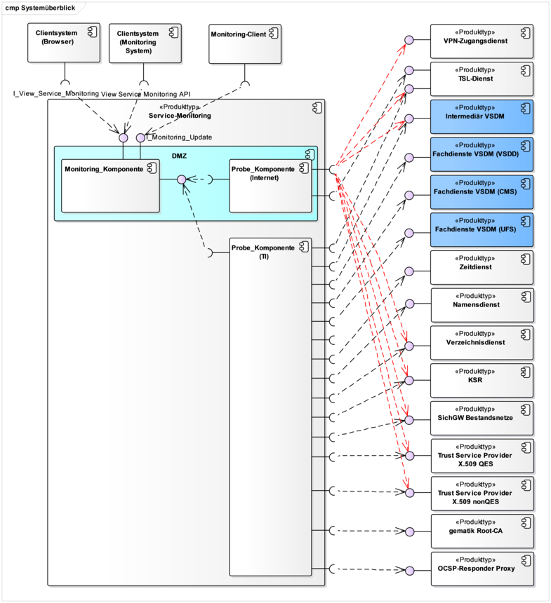
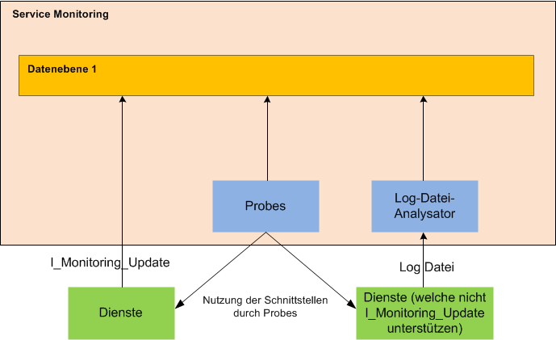
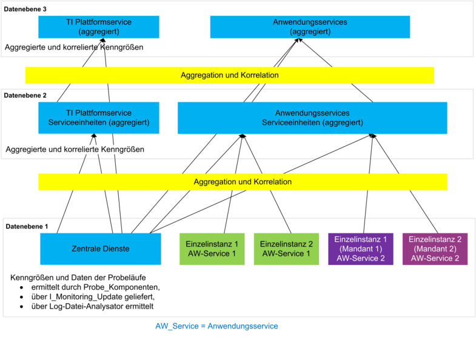
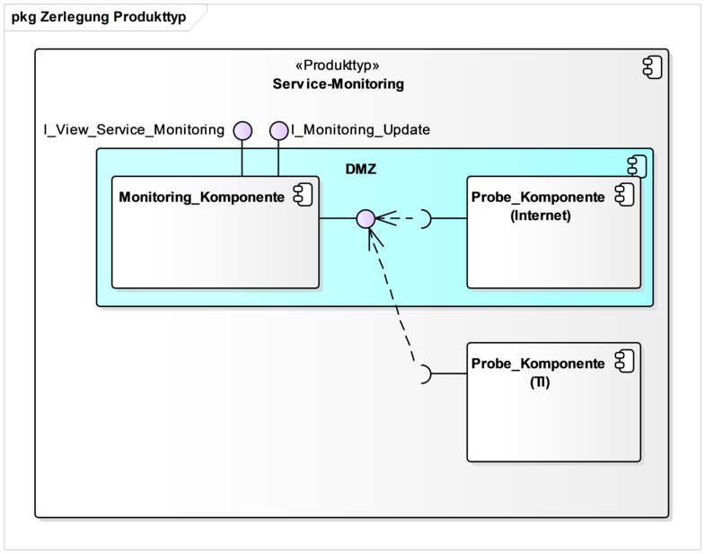
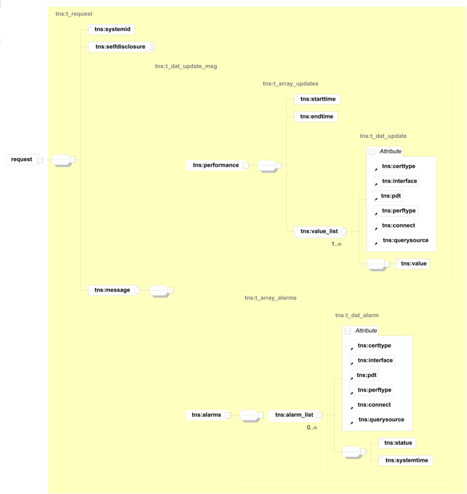

Elektronische Gesundheitskarte und Telematikinfrastruktur
Spezifikation
Service Monitoring
| Version | 1.5.0 |
| Revision | 571896 |
| Stand | 02.03.2020 |
| Status | freigegeben |
| Klassifizierung | öffentlich |
| Referenzierung | gemSpec_ServiceMon |
Änderungen zur Vorversion
Anpassungen des vorliegenden Dokumentes im Vergleich zur Vorversion können Sie der nachfolgenden Tabelle entnehmen.
Dokumentenhistorie
| Version |
Stand |
Kap./ Seite |
Grund der Änderung, besondere Hinweise |
Bearbeitung |
|---|---|---|---|---|
| 1.0.0 |
14.05.18 |
freigegeben |
gematik |
|
| 1.1.0 |
26.10.18 |
Einarbeitung P15.9 |
gematik |
|
| 1.2.0 |
18.12.18 |
Ergänzung ePA-Inhalte |
gematik |
|
| 1.3.0 | 15.05.19 | Einarbeitung P18.1 |
gematik |
|
| Einarbeitung P20.1 | gematik | |||
| 1.4.0 |
02.10.19 |
freigegeben |
gematik |
|
| Einarbeitung P21.1 | gematik | |||
| 1.5.0 | 02.03.20 | freigegeben | gematik |
Die vorliegende Spezifikation definiert die Anforderungen zu Herstellung, Test und Betrieb des Produkttyps Service Monitoring.
Das Service Monitoring überwacht ausgewählte Parameter, um den Betriebszustand der Telematikinfrastruktur und der Anwendungen der Gesundheitstelematik darzustellen. Die vorliegende Spezifikation definiert die Anforderungen zu Herstellung, Test und Betrieb des Service Monitorings.
Das Dokument richtet sich an Hersteller und Anbieter des Service Monitorings sowie Hersteller und Anbieter von Produkttypen, die hierzu eine Schnittstelle besitzen.
Dieses Dokument enthält normative Festlegungen zur Telematikinfrastruktur des deutschen Gesundheitswesens. Der Gültigkeitszeitraum der vorliegenden Version und deren Anwendung in Zulassungs- oder Abnahmeverfahren wird durch die gematik GmbH in gesonderten Dokumenten (z.B. Dokumentenlandkarte, Leistungsbeschreibung) festgelegt und bekanntgegeben.
Schutzrechts-/Patentrechtshinweis
Die nachfolgende Spezifikation ist von der gematik allein unter technischen Gesichtspunkten erstellt worden. Im Einzelfall kann nicht ausgeschlossen werden, dass die Implementierung der Spezifikation in technische Schutzrechte Dritter eingreift. Es ist allein Sache des Anbieters oder Herstellers, durch geeignete Maßnahmen dafür Sorge zu tragen, dass von ihm aufgrund der Spezifikation angebotene Produkte und/oder Leistungen nicht gegen Schutzrechte Dritter verstoßen und sich ggf. die erforderlichen Erlaubnisse/Lizenzen von den betroffenen Schutzrechtsinhabern einzuholen. Die gematik GmbH übernimmt insofern keinerlei Gewährleistungen.
Spezifiziert werden in dem Dokument die von dem Produkttyp bereitgestellten (angebotenen) Schnittstellen. Benutzte Schnittstellen werden hingegen in der Spezifikation desjenigen Produkttypen beschrieben, der diese Schnittstelle bereitstellt. Auf die entsprechenden Dokumente wird referenziert (siehe auch Anhang A5).
Die vollständige Anforderungslage für den Produkttyp ergibt sich aus weiteren Konzept- und Spezifikationsdokumenten, diese sind in dem Produkttypsteckbrief des Produkttyps Service Monitoring verzeichnet.
Detailspezifikationen zu den Monitoringdaten, d. h. zu den Ziel- und Messwerten für z. B. den Durchsatz, die Verfügbarkeit sowie für die Bearbeitungszeit sind in diesem Dokument nicht weiter dargestellt und der [gemSpec_Perf] für die TI-Plattform und für die Fachdienste zu entnehmen.
Weitergehende betriebliche Festlegungen sowie Details zu dem in diesem Dokument verwendeten Begriff „Serviceeinheiten“ sind [gemKPT_Betr] zu entnehmen.
Anforderungen als Ausdruck normativer Festlegungen werden durch eine eindeutige ID sowie die dem RFC 2119 [RFC2119] entsprechenden, in Großbuchstaben geschriebenen deutschen Schlüsselworte MUSS, DARF NICHT, SOLL, SOLL NICHT, KANN gekennzeichnet.
Sie werden im Dokument wie folgt dargestellt:
<AFO-ID> - <Titel der Afo>
Text / Beschreibung
[<=]
Dabei umfasst die Anforderung sämtliche zwischen Afo-ID und Textmarke angeführten Inhalte.
Die folgende Abbildung zeigt die logischen Komponenten und die Außensicht des Service Monitorings.

Abbildung 1: ABB_ServMon_301 Komponenten und Außensicht des Service Monitorings
Das Service Monitoring besteht logisch aus den Systemen Monitoring_Komponente, Probe_Komponente (Internet) und Probe_Komponente (TI).
Über die Probe_Komponenten wird die Verfügbarkeit der Dienste der TI im zentralen Netz der TI und im Internet mittels Probes überwacht. Die in Rot dargestellten Kommunikationsbeziehungen benötigen einen bestehenden IPsec-Tunnel der TI.
Die Ergebnisse der Probes-Messungen werden über eine interne Schnittstelle an die Monitoring_Komponente zur Weiterverarbeitung übertragen.
Hinweis: ABB_ServMon_301 bildet den Stand für das Release 2.1.2 ab und kann bei künftigen Releases Erweiterungen erfahren.
ABB_ServMon_304 zeigt eine Übersicht über die Datenquellen des Service Monitorings.

Abbildung 2: ABB_ServMon_304 Übersicht Service Monitoring-Datenquellen
Kenngrößen auf Datenebene 1 des Service Monitorings stammen aus folgenden Quellen:
Die folgende Abbildung zeigt zum besseren Verständnis des Dokuments beispielhaft verschiedene Daten-Ebenen (es wird aber keine Anzahl von konkreten Ebenen vorgegeben) des Service Monitorings und die entsprechenden Aggregationen/Korrelationen und die Quellen der Daten:

Abbildung 3: ABB_ServMon_303 Datenfluss Service Monitoring
Kenngrößen auf höheren Datenebenen werden durch Aggregation bzw. Korrelation aus vorliegenden Kenngrößen erzeugt. Basis für die Aggregation bzw. Korrelation können vorliegende Kenngrößen und Probe-Daten auf verschiedenen Ebenen sein. Die Aggregation bzw. Korrelation erfolgt Anwendungsservice- bzw. Plattformgrenzen-übergreifend.
Der Log-Datei-Analysator wird für zukünftige Fachdienste genutzt, welche noch nicht das I_Monitoring_Update Interface nutzen.
Im Folgenden wird die Zerlegung des Service Monitorings dargestellt, welche für die Übersicht der funktionalen Leistungsmerkmale in vorliegender Spezifikation nötig ist.

Abbildung 4: ABB_ServMon_300 – Komponentendiagramm des Service Monitorings
In Abbildung 4 werden die Komponenten des Service Monitorings dargestellt.
Die Probes greifen auf die überwachten Schnittstellen analog zu den normalen Clients dieser Schnittstellen aus dem Internet und aus der TI zu. Dafür werden zwei Probe-Komponenten vorgesehen:
Alle Probes mit Zugriff aus dem Internet auf TI Schnittstellen.
Alle Probes mit Zugriff aus der TI auf TI Schnittstellen.
Die Monitoring-Komponente stellt folgende Funktionalitäten bereit:
Die Probe-Komponenten stellen folgende Funktionalitäten bereit:
Die Architektur des Service Monitorings sieht die Erweiterbarkeit um neue Funktionalitäten (z. B. Aufruf zusätzlicher Probes) vor, indem die bestehenden Schnittstellen im Komponentenmodell erweitert oder neue Schnittstellen zu den Komponenten hinzugefügt werden.
TIP1-A_6739
Das Service Monitoring MUSS die Schnittstellen I_View_Service_Monitoring und I_Monitoring_Update implementieren und bereitstellen. <=
Diese Schnittstellen werden in Kap. 5.1 und Kap. 5.2 näher definiert.
TIP1-A_6740
Das Service Monitoring MUSS die Schnittstellen I_Monitoring_Update in der TI und I_View_Service_Monitoring im Internet und der TI für Nutzer mit entsprechenden Rechten anbieten. <=
Diese Schnittstellen werden in Kap. 5.1 und Kap. 5.2 näher definiert.
TIP1-A_6743
Der Anbieter des Service Monitorings SOLL IT-Monitoring-Standardprodukte für das Service Monitoring verwenden.
<=TIP1-A_6745
Das Service Monitoring MUSS so implementiert werden, dass Administratoren Berechtigungen, Schwellwerte, Aggregationsregeln und Probes konfigurieren können.
<=
A_13498
Das Service Monitoring MUSS die Konfigurationsdaten persistent speichern sowie deren Export und Import unterstützen.
<=
TIP1-A_6746
Das Service Monitoring MUSS die Konfiguration sowie den Export und Import von Schwellwerten für jede einzelne Performance-Kenngrößen erlauben. Die Über- bzw. Unterschreitung dieser Schwellwerte durch die Daten der dazugehörenden Performance-Kenngröße MUSS zur Markierung (z.B. in Grün, Gelb und Rot) der entsprechenden Werte in der Darstellung führen. Für jede Performance-Kenngröße MUSS die Angabe mehrerer Schwellwerte mit dazugehörender Kritikalität/Darstellungsfarbe möglich sein.
<=TIP1-A_6747
Das Service Monitoring MUSS mindestens folgende Aggregationsregeln für alle Kenngrößen (übergreifend für alle Dienste und Dienstinstanzen) unterstützen:
Für das Monitoring von komplexen Anwendungsfällen ist die direkte Ermittlung von Kenngrößen für den gesamten Anwendungsfall nicht immer direkt möglich. Deshalb besteht die Notwendigkeit der Aggregation und Darstellung von Teilschritt-Kenngrößen auf Anwendungsfallniveau.
TIP1-A_7084
Das Service Monitoring MUSS für komplexe Anwendungsfälle die folgenden Konfigurationen durch berechtigte Nutzer unterstützen:
TIP1-A_7353
Das Service Monitoring MUSS jedem Nutzer die Konfiguration eines eigenen Dashboards ermöglichen.
<=
A_13501
Das Service Monitoring MUSS dem Nutzer die Veröffentlichung eines eigenen Dashboards ermöglichen. Ein öffentliches Dashboard MUSS von allen anderen Nutzern übernommen werden können.
<=
TIP1-A_7085
Das Service Monitoring MUSS für jede Dienstinstanz einen Wartungskalender unterstützen. Der Wartungskalender MUSS das Eintragen von Wartungszeiträumen erlauben. Die Wartungszeiträume MÜSSEN bei der Berechnung und Darstellung der Verfügbarkeit dieser Dienstinstanz bzw. von übergreifenden Anwendungsfällen berücksichtigt werden.
<=A_13502
Das Service Monitoring MUSS allen Nutzern mit Berechtigungen für eine Dienstinstanz die Anzeige des Wartungskalenders dieser Dienstinstanz ermöglichen. Die Änderung des Wartungskalenders MUSS für alle Nutzer mit der Zusatzberechtigung "Wartungskalender ändern" möglich sein.
<=
TIP1-A_7086
Das Service Monitoring MUSS eine konfigurierbare Alarmierung bei Störungen (Ausfall/Nichtverfügbarkeit, Über-/Unterschreitung von Schwellwerten) pro Kenngröße unterstützen. Als Alarmierungsziel MÜSSEN pro Kombination aus Kenngröße und Dienstinstanz mindestens unterstützt werden:
E-Mail-Adressen
SMS
Die Alarmierungsziele (Gruppen von E-Mail Adressen und/oder SMS Nummern) MÜSSEN in Abhängigkeit von Tageszeit und Wochentag/Feiertag gewählt werden können.
Die Alarmierung MUSS eine Eskalation beinhalten, wenn der Alarmierte die Bearbeitung nicht nach einer konfigurierbaren Zeit bestätigt.
Die Alarmierung MUSS wiederholte Alarmierungen zur gleichen Ursache (z.B. Ausfall eines Dienstes wird alle 5 Minuten gemeldet) unterdrücken können (nur eine Alarmierung wenn der Alarmierungszustand eintritt und (optional) wenn er endet).
Die Alarmierung MUSS berechtigten Nutzern eine Übersicht über die ausgelösten Alarmierungen und den Status der Alarmierung (offen, vom Bearbeiter bestätigt, …) in der Nutzeroberfläche darstellen können.
Die Alarmierung MUSS eine Kurzbeschreibung der auslösenden Ursache enthalten. Die Kurzbeschreibung MUSS konfigurierbar für jede Alarmierung aus mindestens folgenden Quellen wählbar sein:
Durch die Probe ausgeworfene Fehlerbeschreibung.
Konfigurierbarer Text (z.B. für auslösende Bedingungen welche keine nutzbare Beschreibung liefern).
Name des Schwellwerts mit aktuellem Wert.
Die Alarmierung MUSS eine Eskalation beinhalten, wenn der Alarmierte die Bearbeitung nicht nach einer konfigurierbaren Zeit bestätigt.
Die Alarmierung MUSS wiederholte Alarmierungen zur gleichen Ursache (z.B. Ausfall eines Dienstes wird alle 5 Minuten gemeldet) unterdrücken können (nur eine Alarmierung wenn der Alarmierungszustand eintritt und (optional) wenn er endet).
Die Alarmierung MUSS berechtigten Nutzern eine Übersicht über die ausgelösten Alarmierungen und den Status der Alarmierung (offen, vom Bearbeiter bestätigt, …) in der Nutzeroberfläche darstellen können.
Die Alarmierung dient der Benachrichtigung von Service Monitoring-Nutzern über Störungen. Zu den Nutzern gehören auch Betreiber von (Fach-) Diensten, für welche die Alarmierungsziele durch einen Administrator entsprechend eingerichtet werden können.
TIP1-A_7087
Das Service Monitoring MUSS einen Log-Datei-Analysator bereitstellen. Dieser Log-Datei-Analysator MUSS Log-Dateien von Diensten importieren, aus ihnen konfigurierbar Daten extrahieren und in den Service Monitoring-Datenbestand als Kenngrößen übernehmen können. Die Konfiguration für konkrete Log-Dateien MUSS für Administratoren möglich sein.
<=TIP1-A_7088
Das Service Monitoring MUSS sicherstellen, dass ein Nutzer nur die Funktionen nutzen kann, die ihm gemäß seiner Rolle zugeteilt sind.
<=TIP1-A_7089
Das Service Monitoring MUSS den Nutzern des Service Monitorings eine Nutzeroberfläche (I_View_Service_Monitoring) zur Verfügung stellen, welche den Zugriff auf die Betriebsstatusinformationen ermöglicht.
<=TIP1-A_7091
Das Service Monitoring MUSS mittels einer Authentifizierung sicherstellen, dass nur Nutzer mit entsprechenden Rechten die Konfiguration des Service Monitorings ändern können.
<=TIP1-A_7092
Der Anbieter des Service Monitorings MUSS die Inhalte und Funktionen der Administrationsoberflächen sowie deren Nutzung beschreiben.
<=A_13479
Der Anbieter des Service Monitorings SOLL die Gebrauchstauglichkeit der Webanwendung durch Beachtung der Leitsätze gemäß [DIN EN ISO 9241#Teil11] sicherstellen.
<=
A_13480
Der Anbieter des Service Monitorings SOLL die Dialoggestaltung der Webanwendung durch die Beachtung der Grundsätze der Dialoggestaltung gemäß [DIN EN ISO 9241#Teil110] sicherstellen.
<=
A_13481
Der Anbieter des Service Monitorings SOLL bei Verwendung von Formulardialogen in der Webanwendung die Anforderungen und Empfehlungen gemäß [DIN EN ISO 9241-143:2012-06] beachten.
<=
TIP1-A_7094
Das Service Monitoring MUSS alle durch die autorisierten Nutzer (inklusive der Administratoren) erfolgten übergreifenden (persönliche Einstellungen für z.B. eigene Dashboards fallen nicht darunter) Daten-, Konfigurations- und Einstellungsänderungen chronologisch in Form eines Auditlogs protokollieren und auswertbar zur Verfügung stellen.
<=TIP1-A_7095
Das Service Monitoring MUSS alle durch die autorisierten übergeordneten Monitoring-Systeme (I_View_Service_Monitoring) erfolgten Zugriffe und Einstellungsänderungen chronologisch in Form eines Auditlogs protokollieren und auswertbar zur Verfügung stellen. <=
A_13499
Das Service Monitoring MUSS den Zugriff auf die „Auditlogs“ rollenbasiert gestalten.
<=
Verfügbarkeits- und Durchsatzanforderungen für den Betrieb des Service Monitorings sind in der [gemSpec_Perf] vorgegeben.
TIP1-A_6742
Der Betreiber des Service Monitorings MUSS die Verfügbarkeit des Service Monitorings über ein eigenes IT-Monitoring-System erfassen und die Einhaltung der entsprechenden Anforderungen nachweisen.
<=TIP1-A_7096
Das Service Monitoring MUSS ermöglichen, dass die Speicherungsdauer für an das Service Monitoring gelieferte Daten pro Dienst einstellbar ist.
Das Service Monitoring MUSS als Ausgangswert für die Speicherungsdauer ein Jahr für aggregierte Daten und 2 Monate für Rohdaten (über Schnittstelle I_Monitoring_Update gelieferte Daten) als Standardwert setzen und die Verkürzung und Verlängerung der Speicherungsdauer ermöglichen.
Die Verkürzung und Verlängerung der Speicherungsdauer MUSS möglich sein.
<=Die Werte für die Speicherungsdauer werden vom GTI (Gesamtverantwortlicher TI) nach Bedarf festgelegt.
TIP1-A_7097
Der Anbieter des Service Monitorings MUSS entsprechend des Schutzbedarfes der im Service Monitoring dargestellten und verarbeiteten Daten entsprechende Mechanismen zum Schutz vor unberechtigtem Zugriff umsetzen.
<=TIP1-A_7352
Das Service Monitoring MUSS Administratoren die Verwaltung von Nutzer erlauben und – auf Anfrage des GTI – eine Auflistung aller Nutzerkonten liefern können.
<=TIP1-A_7098
Das Service Monitoring MUSS ein nachvollziehbares Zugriffskonzept vorsehen, über das zu jeder Zeit für Administratoren erkenn- und verwaltbar ist, welcher Nutzer welche Zugriffsberechtigungen hat. Dabei MUSS es mindestens folgende Zugriffsberechtigungen für Nutzer geben:
TIP1-A_7111
Das Service Monitoring MUSS für Clients der Service Monitoring-Schnittstellen (z.B. I_View_Service_Monitoring API Web Service) ebenfalls die Definition von Zugriffsberechtigungen erlauben. Dabei entfallen die Rechte zur Konfiguration des Service Monitoring GUIs (Dashboards, …). Diese Zugriffsberechtigungen MÜSSEN auf die eigenen Daten des nutzenden Systems und die Daten aller für die Serviceerbringung nötigen Dienste beschränkbar sein.
<=A_13574
Das Service Monitoring MUSS die Zuordnung von Zugriffsberechtigungen für einzelne - über ihre ProbeID identifizierte - Probes für alle registrierten Nutzer mit folgenden Randbedingungen erlauben:
TIP1-A_7099
Das Service Monitoring DARF Gruppenberechtigungen NICHT vorsehen oder implementieren.
Es ist nicht zulässig, dass mehrere Nutzer eine Nutzerkennung verwenden. <=
Hinweis: Als Gruppenberechtigung wird gewertet, wenn mehrere Nutzer die gleiche Login/Passwort-Kombination benutzen. Das Rollenkonzept erlaubt die Zuordnung gleicher Rechte für verschiedene Nutzer (mit verschiedenen Logins).
TIP1-A_6741
Das Service Monitoring MUSS die Rechte der Nutzer (Akteure) gemäß Tab_Service_Monitoring_Akteure_und_Rollen beschränken.
<=Tabelle 1: Tab_Service_Monitoring_Akteure_und_Rollen
| Schnittstelle |
Akteur |
Basis-Rolle |
Berechtigung / Beschreibung |
|---|---|---|---|
| I_Monitoring_Update (aus dem zentralen Netz der TI erreichbar) |
FA_spez_Dienst, Zentraler_Dienst_TI_Plattform |
Keine Rolle |
Der Nutzer sendet Monitoringdaten an das Service Monitoring. Es erfolgt keine Authentisierung des Nutzers. |
| View Service Monitoring API (aus dem zentralen Netz der TI und aus dem Internet erreichbar) |
ZIS und Monitoring Systeme (z.B. der Fachdienstbetreiber) |
SM-MonRead |
Der Nutzer hat lesenden Zugriff (Sichtbar sind seine eigenen Daten sowie die – für seine Diensterbringung nötigen – TI-Plattformservices) auf Kenngrößen, Schwellwerte und Daten der Probe-Läufe. |
| I_View_Service_Monitoring (im Internet und in der TI erreichbar) |
Registrierter Nutzer (ohne Zusatzberechtigungen Anwendungsservices) |
SM-TI-User |
Der Nutzer hat lesenden Zugriff (Sichtbar sind die Daten der TI-Plattformservices) auf Kenngrößen, Schwellwerte und Daten der Probe-Läufe. |
| Registrierter Nutzer (mit Zusatzberechtigungen für einzelne Anwendungsservices) |
SM-AS-User |
Wie SM-TI-User Zusätzlich hat der Nutzer lesenden Zugriff auf die Daten (Kenngrößen, Schwellwerte und Daten der Probe-Läufe) der berechtigten Anwendungsservices. Diese Zugriff wird eingeschränkt auf die Daten von Dienstinstanzen des Anwendungsservices, welche dem Nutzer zugeordnet sind. |
|
| Registrierter Nutzer (mit Administrationsberechtigungen) |
SM-Admin |
Wie SM-AS-User Zusätzlich hat der Administrator schreibenden und lesenden Zugriff auf die Konfigurationsdaten des Service Monitorings und der Probes. Weiterhin kann er Kenngrößen zu Anwendungsservices oder TI-Plattformservices zuordnen. |
|
| Registrierter Nutzer (mit Nutzerverwaltungsberechtigungen) |
SM-UserAdmin |
Der Administrator kann
|
TIP1-A_7090
Das Service Monitoring MUSS ermöglichen, dass Nutzer eine User-ID, ein initiales Passwort und die zur Zwei-Faktor-Authentifizierung nötigen Mittel zur Nutzung der Schnittstellen I_View_Service_Monitoring beantragen können.
Das Passwort muss durch den Anwender änderbar sein.
Die Schnittstelle darf nur nach erfolgreicher Authentisierung (d.h. nach Nutzen von User-ID, Passwort, Zwei-Faktor-Authentifizierung) genutzt werden können.
Jedem Nutzer muss eine Rolle gemäß Tab_Service_Monitoring_Akteure_und_Rollen zugewiesen werden.
Für Nutzer mit der Rolle SM-AS-User muss der berechtigte Anwendungsservice festgelegt werden.
<=
TIP1-A_7102
Das Service Monitoring MUSS über die Schnittstelle I_View_Service_Monitoring eine grafische Darstellung der Monitoring-Daten bereitstellen.
<=TIP1-A_7103
Das Service Monitoring MUSS in der grafischen Darstellung ein Dashboard zur Darstellung des Status der überwachten Dienste bereitstellen.
<=TIP1-A_7104
Das Service Monitoring MUSS die aktuellen und historischen Ereignisse des Service Monitorings wie z. B. Statusmessungen der Probes oder empfangene Performance- und Auslastungsdaten grafisch über marktübliche Browser (mindestens Firefox in der aktuellen Version) darstellen können.
<=TIP1-A_7105
Das Service Monitoring MUSS in der grafischen Darstellung die Performance-, Auslastungs- und Verfügbarkeitsdaten mit konfigurierbaren Zeiträumen anzeigen. Reports mit den Performance-, Auslastungs- und Verfügbarkeitsdaten mit konfigurierbaren Zeiträumen MÜSSEN über das GUI als File exportierbar sein. Das Service Monitoring MUSS eine Beschreibung von dem File-Format bereitstellen, welche auch über das GUI abgerufen werden kann.
<=TIP1-A_7106
Das Service Monitoring MUSS in der grafischen Darstellung die Konfiguration eines Dashboards zur Darstellung der Störungen der überwachten Dienste bereitstellen. Unter Störungen fallen Ausfall/Nichtverfügbarkeit und Über-/Unterschreitung von Schwellwerten. Das Störungs-Dashboard zeigt nur die Dienste mit Störungen und keine Dienste ohne Störungen.
<=TIP1-A_7107
Das Service Monitoring MUSS für die grafische Darstellung eine Dokumentation bereitstellen (z. B. Bedeutung der Statusfarben, Bedingungen für Statusänderungen). Die Dokumentation MUSS für die Nutzer einsehbar sein.
<=TIP1-A_7108
Die grafische Darstellung SOLL Details zu den Probe-Messungen (unter anderem den Mitschnitt der Prüfkommunikation) für eine konfigurierbare Anzahl der letzten Messungen speichern und anzeigen können.
<=TIP1-A_7109
Die Darstellung der Monitoring Daten SOLL – konfigurierbar für jede Kenngröße – in Tabellen und Metriken anzeigt werden können.
<=TIP1-A_7110
Die Darstellung der Monitoring-Daten SOLL einen zeitlichen Bezug zwischen auswählbaren Kenngrößen darstellen können.
<= Als Bestandteil der I_View_Service_Monitoring bietet der View Service Monitoring API Web Service die Möglichkeit der automatisierten Abfrage über HTTP-GET-Requests, die als Antwort wahlweise Performance-Daten im XML- oder JSON-Format zurückgeben.
TIP1-A_7112
Das Service Monitoring MUSS die Schnittstelle View Service Monitoring API unter einer URL im Internet und in der TI bereitstellen.
<=TIP1-A_7113
Das Service Monitoring MUSS für das View Service Monitoring API
TIP1-A_7349
Das Service Monitoring MUSS die HTTP GET-Anfragen in der Schnittstelle View Service Monitoring API entsprechend von Parametern in der Anfrage beantworten:
TIP1-A_7350
Das Service Monitoring MUSS in der Schnittstelle View Service Monitoring API für die – über Probes ermittelten – Daten eine Zuordnung zur Probe-Ausführung ermöglichen.
<=
TIP1-A_7351
Das Service Monitoring MUSS über die Schnittstelle View Service Monitoring API einen Report mit den Kenngrößen und ihren Schwellwerten bereitstellen.
<=TIP1-A_7348
Das Service Monitoring MUSS den Aufrufer authentifizieren und den Zugriff auf Service Monitoring-Daten entsprechend seinen Zugriffsrechten beschränken.
<=
TIP1-A_7114
Das Service Monitoring MUSS die Schnittstelle I_View_Service_Monitoring durch Verwendung von TLS mit serverseitiger Authentisierung sichern.
<=Diese Schnittstelle wird aus Kompatibilität zur Schnittstelle der Störungsampel [gemSpec_St_Ampel] unverändert übernommen. Dies erleichtert die Migration von Diensten, welche bereits die I_Monitoring_Update-Schnittstelle der Störungsampel nutzen.
Diese Schnittstelle ermöglicht das Senden von Monitoringdaten der fachanwendungsspezifischen Dienste und der zentralen Dienste der TI-Plattform an das Service Monitoring.
Die zu sendenden Daten sind in Tab_gemKPT_Betr_Performance-Kenngroessen festgelegt.
TIP1-A_7116
Das Service MonitoringMUSS die Schnittstelle I_Monitoring_Update gemäß Tabelle Tab_Service_Monitoring_I_Monitoring_Update anbieten.
Tabelle 2: Tab_Service_Monitoring_I_Monitoring_Update
| Name |
I_Monitoring_Update |
|
|---|---|---|
| Version |
Webservice: v1.1 |
|
| Webservice Operationen |
Name |
Kurzbeschreibung |
| update |
Die Operation ermöglicht das Senden von Monitoringdaten an das Service Monitoring. |
|
| WSDL |
I_Monitoring_Update10.wsdl Version: 1.1.0 TargetNamespace: http://ws.gematik.de/tel/stoerungsampel/wsdl/v1.1 |
|
| Schema |
I_Monitoring_Update10.xsd Version: 1.1.0 TargetNamespace: http://ws.gematik.de/tel/stoerungsampel/v1.1 ProductInformation.xsd Version: 1.1.0 TargetNamespace: http://ws.gematik.de/tel/version/ProductInformation/v1.1 TelematikError.xsd Version: 2.0.0 TargetNamespace: http://ws.gematik.de/tel/error/v2.0 |
|
| Webservice Zugangspunkt |
https://monitoring-update.stampel.telematik:8443/I_Monitoring_Update10 |
|
TIP1-A_7117
Das Service Monitoring und die Clients MÜSSEN die Schnittstelle I_Monitoring_Update in ihrer jeweiligen Rolle Client bzw. Server als SOAP-Webservice über HTTPS implementieren. Der Webservice wird durch die Dokumente I_Monitoring_Update10.wsdl und I_Monitoring_Update10.xsd sowie Tab_Service_Monitoring_SOAP-Request und Tab_Service_Monitoring_SOAP-Response definiert.
<=TIP1-A_7118
Der Anbieter des Service Monitorings MUSS dem Anbieter des Clients der Schnittstelle I_Monitoring_Update eine eindeutige SystemID (zur Zuordnung der Monitoringdaten zur Instanz des Produkttyps) zuweisen, die der Anbieter des Clients in den SOAP-Requests (tns:systemid) verwenden MUSS.
<=
TIP1-A_7119
Der Anbieter des Clients der Schnittstelle I_Monitoring_Update MUSS dem Anbieter des Service Monitorings die IP-Adressen mitteilen, von denen Daten an das Service Monitoring gesendet werden.
Der Anbieter des Clients MUSS mit dem Anbieter des Service Monitorings die gültigen Servicepunkte (Host, Port und URL) verifizieren. <=
In einer Nachricht können mehrere Performancewerte oder Auslastungswerte übertragen werden.
TIP1-A_7120
Der Client der Schnittstelle I_Monitoring_Update MUSS die Übertragung der in [gemSpec_Perf] geforderten Monitoringdaten innerhalb von 120 Sekunden nach Ablauf eines Reportzeitraumes an das Service Monitoring beginnen. Eine Kennzeichnung des Report-Zeitraumes erfolgt durch eine Zeitbereichsangabe (Startzeit und Endzeit) in der übermittelten Nachricht.
TIP1-A_7125
Das Service Monitoring MUSS Berichtszeiträume – für die nach der maximalen Zeitabweichung zwischen Berichtszeitraum und Nachrichtenübermittelung keine Monitoringdaten über die Schnittstelle I_Monitoring_Update geliefert wurden – im GUI bzw. Dashboard hervorheben.
<=
TIP1-A_6744
Das Service Monitoring MUSS über die Schnittstelle I_Monitoring_Update gelieferte Daten in den Service Monitoring-Datenbestand als Kenngrößen entsprechend [gemSpec_Perf] übernehmen. Diese Kenngrößen MÜSSEN analog zu den durch Probes ermittelten Kenngrößen und den im Service Monitoring durch Aggregation/Korrelation ermittelten Kenngrößen
Die Schnittstelle ist aus dem zentralen Netz der TI-Plattform erreichbar.
TIP1-A_7121
Das Service Monitoring MUSS die Schnittstelle I_Monitoring_Update durch Verwendung von TLS mit serverseitiger Authentisierung sichern.
Das Service Monitoring MUSS sich mit der Identität ID.ZD.TLS-S und der enthaltenen Admission-OID „oid_stamp“ gegenüber den nutzenden Systemen authentisieren.
<=TIP1-A_7122
Der Anbieter des Service Monitorings MUSS die Voraussetzungen dafür schaffen, dass die in der [gemSpec_Perf] unter GS-A_4147 festgelegten Daten und Informationen an das Service Monitoring übermittelt werden können.
Hierfür sind durch den Anbieter des Service Monitorings mindestens zu leisten:
TIP1-A_7123
Das Service Monitoring MUSS fehlerhafte Zugriffe auf die Webservice-Schnittstelle I_Monitoring_Update
TIP1-A_7124
Das Service Monitoring MUSS jeden akzeptierten SOAP-Request mit einem SOAP-Reply beantworten, der eine eindeutige Nachrichten-ID enthält, die als Referenz für Rückfragen beim Anbieter des Service Monitorings genutzt werden kann.
<=TIP1-A_7126
Der Nutzer der Schnittstelle I_Monitoring_Update MUSS beim Versenden von Verfügbarkeitsdaten im Alarm-Nachrichtenelement/Nachrichtenobjekt einen Zeitstempel übermitteln, der die Startzeit oder Endzeit des Alarms angibt.
<=TIP1-A_7127
Der Nutzer der Schnittstelle I_Monitoring_Update MUSS durch die Verwendung von Attributen gemäß der Tabelle Tab_Service_Monitoring_Attribute jede übermittelte Performance-Kenngröße und jeden übermittelten Alarm-Status-Wert eindeutig kennzeichnen.
Optionale Attribute dürfen nur verwendet werden, wenn sie zur eindeutigen Zuordnung benötigt werden.
<=Tabelle 3: Tab_Service_Monitoring_Attribute
| Attribut / Objekt |
Beschreibung |
|---|---|
| pdt |
Produkttyp-ID lt. [gemKPT_Betr] |
| perftype |
Performance-Kenngrößen-ID lt. [gemKPT_Betr] |
| interface |
Schnittstellenoperationen-ID lt. [gemKPT_Betr] |
| certtype |
Zertifkats-Typen-ID lt. [gemKPT_Betr] |
| querysource |
Aufrufquellen-ID lt. [gemKPT_Betr] |
| connect |
Eindeutige ID zur Identifikation bei Ende-zu-Ende-Messungen im Netzwerk-Bereich |
Für die Übermittlung von Monitoringdaten wird der SOAP-Request der Operation „update“ verwendet.
Die folgende Abbildung zeigt die Datenstruktur des SOAP-Requests.

Abbildung 5: Abb_Service_Monitoring_SOAP-Request
Tabelle 4: Tab_Service_Monitoring_SOAP-Request, Beschreibung der Elemente
| Element |
Beschreibung |
|---|---|
| tns:request |
definiert den SOAP-Request, der über die Operation update an das Service Monitoring gesendet wird. |
| tns:systemid |
ermöglicht eine eindeutige Identifikation des sendenden Systems/Dienstes. Diese ID MUSS eindeutig sein und deren Vergabe erfolgt in Abstimmung zwischen dem Anbieter Service Monitoring und dem Dienstanbieter. |
| tns:selfdisclosure |
enthält Informationen zur Selbstauskunft eines meldenden Systems, siehe [gemSpec_OM]. |
| tns:message |
beinhaltet die in [gemSpec_Perf] für den Dienst geforderten Verfügbarkeits-, Performance- und Auslastungsdaten. |
| tns:performance |
beinhaltet die in [gemSpec_Perf] für den Dienst geforderten Performance- und Auslastungsdaten. |
| tns:alarms |
beinhaltet die in [gemSpec_Perf] für den Dienst geforderten Verfügbarkeitsdaten. |
| tns:starttime, tns:endtime |
definieren das zugrundeliegende Zeitintervall für Performance- und Auslastungswerte. |
| tns:value_list |
enthält die Liste der Performance-Kenngrößen vom Typ t_dat_update. Dieses Element muss die folgenden Attribute enthalten. tns:interface: Schnittstellenoperationen-ID lt. [gemKPT_Betr] tns:pdt: Produkttyp-ID lt. [gemKPT_Betr] tns:perftype: Performance-Kenngrößen-ID lt. [gemKPT_Betr] Dieses Element kann die folgenden Attribute enthalten. tns:certtype: Zertifkats-Typen-ID lt. [gemKPT_Betr] tns:connect: Eindeutige ID zur Identifikation bei Ende-zu-Ende-Messungen im Netzwerk-Bereich tns:querysource: Aufrufquellen-ID lt. [gemKPT_Betr] Mit einer SOAP-Nachricht können mehrere Werte für gleiche Zeitintervalle übergeben werden. |
| tns:value |
Wert der Performance-Kenngröße |
| tns:alarm_list |
enthält die Alarmstatus-Informationen. Dieses Element muss die folgenden Attribute enthalten. tns:interface: Schnittstellenoperationen-ID lt. [gemKPT_Betr] tns:pdt: Produkttyp-ID lt. [gemKPT_Betr] tns:perftype: Performance-Kenngrößen-ID lt. [gemKPT_Betr] Dieses Element kann die folgenden Attribute enthalten. tns:certtype: Zertifkats-Typen-ID lt. [gemKPT_Betr] tns:connect: Eindeutige ID zur Identifikation bei Ende-zu-Ende-Messungen im Netzwerk-Bereich tns:querysource: Aufrufquellen-ID lt. [gemKPT_Betr] |
| tns:status |
enthält den Alarm-Status. open: Alarmstatus gesetzt close: Alarmstatus gelöscht warn: nicht benutzt grace: nicht genutzt |
| tns:systemtime |
Alarmzeit des sendenden Systems zur Erkennung von Inkonsistenzen (z.B. Alarme aus historischen Daten). |
Die Rückgabe enthält die Elemente gemäß der Tabelle Tab_Service_Monitoring_SOAP-Response.
Tabelle 5: Tab_Service_Monitoring_SOAP-Response, Beschreibung der Elemente
| Element |
Beschreibung |
|---|---|
| tns:request |
definiert die SOAP-Response, die als Antwort auf den SOAP-Request an den Nutzer gesendet wird. |
| tns:result |
beinhaltet Abnahmebestätigung der Nachricht. true | 1: Die Nachricht wurde vom Service Monitoring angenommen und zur Analyse der Messwerte weitergeleitet. false | 0: Die Nachricht konnte nicht an das Auswertesystem weitergeleitet werden. |
| tns:id |
ermöglicht eine eindeutige Quittungs-ID für gesendete Nachricht (relevant für Fehleranalyse). |
| tns:selfdisclosure |
enthält Informationen zur Selbstauskunft des Service Monitorings, siehe [gemSpec_OM]. |
Für den Fehlerfall ist das Nachrichtenelement err:Error (gematik-SOAP-Fault, definiert in Schemadatei TelematikError.xsd gemäß [gemSpec_OM]) verfügbar.
TIP1-A_7128
Der Nutzer der Schnittstelle I_Monitoring_Update MUSS beachten, dass bei Monitoringnachrichten die maximale HTTP-Nachrichtenlänge (Headerinformationen und Daten) von 16.000 Bytes nicht überschritten wird. Größere Nachrichten werden verworfen.
<=Nachrichten mit fehlenden oder inkonsistenten Informationen werden akzeptiert, der Dateninhalt jedoch verworfen.
Das sendende System erhält als Rückmeldung eine Nachrichten-ID, die für Rückfragen beim Anbieter des Service Monitorings als Referenz genutzt werden kann. Eine Referenzierung von übermittelten Nachrichten ist nur im Rahmen der genutzten Datenaufbewahrungsrichtlinie möglich.
TIP1-A_7129
Der Nutzer der Schnittstelle I_Monitoring_Update MUSS in jeder SOAP-Nachricht das Element selfdisclosure (Selbstauskunft) befüllen. Die Selbstauskunft basiert auf dem Schema [ProductInformation.xsd] gemäß [gemSpec_OM].
<=A_15166
Der Nutzer der Schnittstelle I_Monitoring_Update SOLL die Vertrauenswürdigkeit der Verbindung durch die Auswertung des Serverzertifikats überprüfen.Die Prüfung SOLL gemäß gemSpec_PKI# TUC_PKI_018 mit
- PolicyList: oid_zd_tls_s (gemäß gemSpec_OID)
- KeyUsage: digitalSignature (Prüfung auf Vorhandensein des Bits)
- ExtendedKeyUsages: serverAuth (1.3.6.1.5.5.7.3.1)
- OCSP-Graceperiod: 0
- Offlinemodus: nein
- TOLERATE_OCSP_FAILURE: false
- Prüfmodus: OCSP
erfolgen. Alternativ ist die Prüfung gemäß GS-A_5581 zulässig.
<=
Die hier beschriebenen TUCs werden in Probes für wiederkehrende Abläufe genutzt.
TIP1-A_7147
Das Service Monitoring MUSS TUC_SM_001_DNS_Name_Resolution entsprechend Tab_Service_Monitoring_TUC_SM_001_DNS_Name_Resolutionbereitstellen. Dieser TUC MUSS in allen Probes zur DNS-Namensauflösung genutzt werden.
Tabelle 6: Tab_Service_Monitoring_TUC_SM_001_DNS_Name_Resolution
Name |
TUC_SM_001_DNS_Name_Resolution |
|
|---|---|---|
Beschreibung |
Dieser TUC führt die Auflösung eines FQDN in eine IP-Adresse durch. |
|
Vorbedingungen |
|
|
Eingangsdaten |
|
|
Komponenten |
|
|
Ausgangsdaten |
|
|
Standardablauf |
Aktion |
Beschreibung |
IP-Adresse der Schnittstelle ermitteln |
Durch eine DNS-Anfrage (I_DNS_Name_Resolution:: get_IP_Address.) wird der FQDN in eine IP-Adresse aufgelöst. |
|
Falls bei der DNS-Anfrage keine Antwort (und kein DNS-Fehler) ermittelt werden konnte |
Prüfung der Erreichbarkeit des DNS-Nameserver über TUC_SM_002_Erreichbarkeitsprüfung. |
|
Falls bei der DNS-Anfrage eine Antwort oder ein DNS-Fehler ermittelt werden konnte |
Die Service Monitoring-Daten (aus den Eingangsdaten) werden entsprechend der durchgeführten Aktionen, Tab_Service_Monitoring_Probe_Daten und um die Performance-Kenngröße „Bearbeitungszeit“
|
|
Rückgabe der Daten |
Rückgabe der Ausgangsdaten |
|
<=TIP1-A_7148
Das Service Monitoring MUSS TUC_SM_002_Erreichbarkeitsprüfung entsprechend Tab_Service_Monitoring_TUC_SM_002_Erreichbarkeitsprüfung bereitstellen. Dieser TUC MUSS in Probes genutzt werden wenn
Tabelle 7: Tab_Service_Monitoring_TUC_SM_002_Erreichbarkeitsprüfung
| Name |
TUC_SM_002_Erreichbarkeitsprüfung |
|
|---|---|---|
| Beschreibung |
Dieser TUC prüft die Erreichbarkeit einer Schnittstelle/Dienstes. |
|
| Vorbedingungen |
|
|
| Eingangsdaten |
|
|
| Komponenten |
Service Monitoring Probe, jeweiliger Dienst |
|
| Ausgangsdaten |
|
|
| Standardablauf |
Aktion |
Beschreibung |
| Prüfung ob Port(s) offen sind |
Für die übergebenen Ports/IP-Adresse wird je nach Eingangsparametern ein TCP-SYN-Scan oder ein UDP-Scan durchgeführt. |
|
| Ergänzen der Service Monitoring-Daten |
Die Service Monitoring-Daten (aus den Eingangsdaten) werden entsprechend der durchgeführten Aktionen bzw. deren Ergebnis ergänzt. Falls
|
|
| Rückgabe der Daten |
Rückgabe der Ausgangsdaten |
|
Die Probes werden im Normalfall in allen Umgebungen (RU (Referenzumgebung), TU (Testumgebung) und PU (Produktivumgebung)) eingesetzt. Eine Ausnahme stellen Probes dar, welche sich mit SMC-B-Zertifikaten authentifizieren müssen. Offener Punkt: Die Verfügbarkeit von SMC-B-Zertifikaten für die PU befindet sich noch in der Klärung. Deshalb werden diese Probes derzeit nur für die Testumgebungen RU und PU TU gefordert. Diese Probes werden im Titel des entsprechenden Unterkapitels mit "*" gekennzeichnet.
TIP1-A_7130
Das Service Monitoring MUSS Administratoren das Einbringen/Installieren von Probes in das laufende Service Monitoring-System erlauben.
<=TIP1-A_7131
Das Service Monitoring MUSS die Entwicklung eigener Probes erlauben. Falls für die Probe Entwicklung Tools vorgegeben sind, MÜSSEN diese benannt werden. Nötige Randbedingungen (z.B. Schnittstelle zwischen Probes und dem Service Monitoring System) MÜSSEN dokumentiert werden.
<=TIP1-A_7132
Das Service Monitoring MUSS die Verfügbarkeit der Schnittstellen der fachanwendungsspezifischen Dienste und der zentralen Dienste der TI-Plattform sowie der Dienste sicherer Übermittlungsverfahren (sowohl im zentralen Netz der TI als auch im Internet) durch Abfrage der Schnittstellen mit Systemen, die das Verhalten der echten Nutzer der Schnittstellen simulieren (den sogenannten Probes) ermitteln.
Die Probes senden spezifikationskonforme Abfragen – welche den Abfragen der echten Nutzer möglichst nahekommen – an die Schnittstellen und vergleichen die Antworten mit dem erwarteten Ergebnis. Wenn die Antwort dem erwarteten Ergebnis entspricht, wird die Schnittstelle als verfügbar gewertet. Bei Abweichungen vom erwarteten Ergebnis MUSS die Schnittstelle – optional in Abhängigkeit von Regeln – als nicht verfügbar gewertet werden.
<=
A_13496
Das Service Monitoring MUSS die Antworten von überwachten Diensten analysieren und daraus den Status von dem Dienst ableiten. Für diese Analyse MUSS mindestens die Prüfung auf das Vorhandensein bzw. Nichtvorhandensein von konfigurierbaren Textteilen in der Antwort möglich sein. Die Analyse MUSS für jede Probe/Fachdienst-Kombination individuell konfigurierbar sein. <=
TIP1-A_7115
Das Service Monitoring MUSS für das Monitoring der Verfügbarkeit die Ergebnisse verschiedener Probe-Läufe (z.B. bei redundanten Knoten oder wenn die Verfügbarkeit eines Anwendungsfalls aus der Verfügbarkeit von beteiligten Diensten abgeleitet wird) kombinieren können.
<=TIP1-A_7134
Die von den Probes ausgeführten Operationen und das Ausführungsintervall MÜSSEN vom Anbieter des Service Monitorings mit den Betreibern der überwachten Dienste im Rahmen der gematik-Vorgaben abgestimmt werden.
<=TIP1-A_7135
Das Service Monitoring DARF die mittels Probes überwachten Dienste NICHT negativ beeinflussen.
<=TIP1-A_7136
Das Service Monitoring MUSS berechtigten Nutzern die Eingabe bzw. Änderung von Konfigurationsdaten von Probes erlauben. Für jede Probe MÜSSEN mehrere Konfigurationsdatensätze unterstützt werden.
<=TIP1-A_7137
Das Service Monitoring MUSS in Probes die Konfiguration der erwarteten Antworten von aufgerufenen Operationen erlauben. Es MUSS möglich sein – neben der normalen fachlichen Antwort – die Fehlermeldung oder ausbleibende Antwort einer Operation als positives Probe-Ergebnis zu werten.
<=TIP1-A_7138
Das Service Monitoring MUSS in Probes die Konfiguration von Kenngrößen für die ermittelten Werte (z. B. Bearbeitungszeit von aufgerufenen Operationen) erlauben. Diese Kenngrößen und die über die Schnittstelle I_Monitoring_Update gelieferten Performance-Kenngrößen sowie alle anderen vorhandenen Kenngrößen im Service Monitoring (z.B. durch den Log-Datei-Analysator importierte Kenngrößen) MÜSSEN in den Aggregationsregeln und Schnittstelle I_View_Service_Monitoring (Darstellung und View Service Monitoring API Web Service) verwendet werden können.
<=TIP1-A_7328
Das Service Monitoring MUSS in Probes die Konfiguration der Konfigurationsvariante erlauben. Die Konfigurationsvariante identifiziert den Satz von Konfigurationsdaten, welche für diese Probe-Ausführung genutzt werden. Die Konfigurationsvariante MUSS für jede Probe-Ausführung in dem Service Monitoring-Datensatz abgelegt werden. Die Konfigurationsvariante MUSS zusammen mit den dazugehörigen Konfigurationsdaten bei der Darstellung der Probe im GUI einsehbar sein.
<=
TIP1-A_7139
Das Service Monitoring MUSS berechtigten Nutzern die vorhandenen Probes anzeigen und für jede Probe in Kombination mit einem Konfigurationsdatensatz den Ausführungszeitpunkt wählen lassen:
A_13500
Das Service Monitoring MUSS Nutzern entsprechend ihren Berechtigungen auf Dienstinstanzen für die vorhandenen Probes Einsicht in die konfigurierten Ausführungszeitpunkte gewährleisten.
<=
A_13497
Das Service Monitoring MUSS berechtigten Nutzern die vorhandenen Probes anzeigen und für jede Probe in Kombination mit einem Konfigurationsdatensatz den/die Ausführungszeitpunkt(e) für jede Dienstinstanz individuell wählen lassen. <=
TIP1-A_7140
Das Service Monitoring MUSS die parallele Ausführung von Probes erlauben. Auch eine einzelne Probe MUSS mehrfach parallel (z.B. für verschiedene Dienstinstanzen) ausführbar sein. <=
TIP1-A_7141
Das Service Monitoring MUSS berechtigten Nutzern eine Übersicht über die aktiven Probes mit ihren Ausführungszeitpunkten anzeigen können. Aktive Probes sind Probes mit Ausführungszeitpunkten in der Zukunft.
Das Service Monitoring MUSS den berechtigten Nutzern die Änderung und Stornierung der Ausführungszeitpunkte der Probes erlauben. <=
TIP1-A_7142
Das Service Monitoring MUSS für alle Probe Ausführungen folgende Daten erfassen
TIP1-A_7143
Das Service Monitoring MUSS für Probes, welche sich aus Aufrufen mehrerer Operationen zusammensetzen, das Probe-Ergebnis folgendermaßen bilden:
Probe-Ergebnis der gesamten Probe:
OK – Falls alle aufgerufenen Operationen ohne Fehler beendet wurden.
7107 „In der Probe ist ein Fehler aufgetreten“ – falls ein oder mehrere Operationen mit Fehlern beendet wurden.
TIP1-A_7144
Das Service Monitoring MUSS die parallele Ausführung von mehreren Probes unterstützen. Die gegenseitige Beeinflussung von Probes MUSS vermieden werden (ist eine Probe blockiert oder verlangsamt, dürfen andere Probes nicht davon beeinflusst sein).
<=TIP1-A_7145
Das Service Monitoring MUSS in Probes die Konfiguration von Timeouts für aufgerufene Operationen erlauben. Für das Timeout MUSS die Angabe eines Probe-Ergebnisses, einer Aktion oder eines alternativen Pfades im Probe-Ablauf möglich sein.
<=
TIP1-A_7093
Das Service Monitoring MUSS für Probes den Einsatz von Smartcards ermöglichen und dafür Kartenterminals vorsehen.
<=
In vorliegender Spezifikation müssen für alle Probes, die mit SMC-B-Zertifikaten (OSIG und AUT) arbeiten, Kartenterminals nutzbar sein.
TIP1-A_7149
Das Service Monitoring MUSS die Probe DNS_Name_Resolution entsprechend Tab_Service_Monitoring_Probes_DNS_Name_Resolution bereitstellen.
Tabelle 8: Tab_Service_Monitoring_Probes_DNS_Name_Resolution
| Element |
Beschreibung |
|---|---|
| Benennung der Probe |
DNS_Name_Resolution |
| Dienst |
Namensdienst |
| Schnittstelle |
I_DNS_Name_Resolution |
| Operation |
get_IP_Address |
| Netzwerk |
Internet zentrales Netz der TI |
| Beschreibung |
Diese Probe wird ausgeführt für
|
| Vorbedingung |
Für die Probe müssen folgende Informationen konfigurierbar sein:
|
| Nachbedingung |
Im Service Monitoring müssen für die Teilschritte des Probe-Ablaufs die dort definierten Daten für jeden DNS-Nameserver verfügbar sein. |
| Standardablauf |
1. Die Probe ruft für jeden DNS-Nameserver TUC_SM_001_DNS_Name_Resolution mit der FQDN, dem Flag für die DNS-Record Validierung und den Service Monitoring Daten für diese Operation auf. |
| 2. Rückgabe der ermittelten Daten an das Service Monitoring. Alternativ können die Daten auch nach jeden Teilschritt an das Service Monitoring übergeben werden. |
TIP1-A_7150
Das Service Monitoring MUSS die Probe Konnektorregistrierung entsprechend Tab_Service_Monitoring_Probes_Konnektorregistrierung bereitstellen.
Tabelle 9: Tab_Service_Monitoring_Probes_Konnektorregistrierung
Element |
Beschreibung |
|---|---|
Benennung der Probe |
Konnektorregistrierung |
Dienst |
Registrierungsserver |
Schnittstelle |
I_Registration_Service |
Operation |
registerKonnektor |
Netzwerk |
Internet |
Beschreibung |
Diese Probe wird ausgeführt für alle Standorte des VPN-ZugD, inkl. der Schnittstelle I_DNS_Name_Resolution (implizit für Namensraum Internet). |
Vorbedingung |
Der Betreiber des Registrierungsservers muss informiert sein, dass für eine festgelegte Contract-ID durch die Probes häufig eine Registrierung und Deregistrierung erfolgt. |
Nachbedingung |
Im Service Monitoring müssen die definierten Daten für jeden VPN-Konzentrator des entsprechenden VPN-Zugangsdienstes verfügbar sein:
|
Standardablauf |
1. Ermittlung der URI aller Registrierungsservers für alle DNS-Domänen (siehe auch TIP1-A_4825 [gemSpec_Kon]).
beendet.
|
2. Für jeden ermittelten Registrierungsservers: |
|
2.1. Erstellung eines registerKonnektor-Requests inklusive Signatur durch SM-B / C.HCI.OSIG mit passender ContractID für die DNS Domäne (siehe auch TIP1-A_4390 [gemSpec_VPN_ZugD] bzw. TIP1-A_4825 [gemSpec_Kon]). |
|
2.2. Aufruf Operation I_Registration_Service::registerKonnektor (siehe auch TIP1-A_4390 [gemSpec_VPN_ZugD] bzw. TIP1-A_4825 [gemSpec_Kon]). |
|
2.3. Ermittlung der Service Monitoring-Daten für Operation registerKonnektor entsprechend Tab_Service_Monitoring_Probe_Daten und Erfassung der Performance-Kenngröße „Bearbeitungszeit“. |
|
2.4. Auf- und Abbau eines TI-/SIS-Tunnels entsprechend Probe „ VPN Tunnel“ als Nachweis, dass der gerade registrierte Konnektor bzw. seine Zertifikate durch das ZugD-Netz korrekt propagiert wurden, und für die TI-Verbindungen verwendet werden können. |
|
2.5. Erstellung einer deRegisterKonnektorRequest-Struktur inklusive Signatur durch SM-B / C.HCI.OSIG (siehe auch TIP1-A_4391 [gemSpec_VPN_ZugD] bzw. TIP1-A_4827 [gemSpec_Kon]) |
|
2.6. Aufruf Operation I_Registration_Service::deRegisterKonnektor (siehe auch TIP1-A_4827 [gemSpec_Kon]) mit der URI des Registrierungsservers. |
|
2.7. Ermittlung der Service Monitoring-Daten für Operation deRegisterKonnektor entsprechend Tab_Service_Monitoring_Probe_Daten und Erfassung der Performance-Kenngröße „Bearbeitungszeit“. |
|
2.8. Ermittlung der Service Monitoring-Daten für die gesamte Probe entsprechend Tab_Service_Monitoring_Probe_Daten. |
|
3. Rückgabe der ermittelten Daten an das Service Monitoring. |
|
Ursachen-Analyse im Fehlerfall |
Falls im Standardablauf bei den Aufrufen des Registrierungsservers Fehler auftreten (es wird keine erwartete Antwort und keine Fehlermeldung geliefert), muss die Erreichbarkeit des Dienstes mit TUC_SM_002_Erreichbarkeitsprüfung geprüft und die Probe mit dem nächsten Registrierungsserver fortgesetzt werden. Das „Probe-Ergebnis“ für den Aufruf dieses Registrierungsservers wird auf
gesetzt. |
TIP1-A_7151
Das Service Monitoring MUSS die Probe VPN-Tunnel entsprechend Tab_Service_Monitoring_Probes_VPN_Tunnel bereitstellen.
Tabelle 10: Tab_Service_Monitoring_Probes_VPN_Tunnel
Element |
Beschreibung |
|---|---|
Benennung der Probe |
VPN Tunnel |
Dienst |
VPN-Zugangsdienst |
Schnittstelle |
I_Secure_Channel_Tunnel |
Operation |
I_Secure_Channel_Tunnel::connect |
Netzwerk |
Internet |
Beschreibung |
Diese Probe wird ausgeführt für alle VPN-Konzentratoren aller Standorte des VPN-ZugD, inkl. der Schnittstelle I_DNS_Name_Resolution (implizit für Namensraum Internet und TI). |
Vorbedingung |
Der Konnektor (den die Probe simuliert) muss für alle VPN-Zugangsdienste registriert sein.
|
Nachbedingung |
Im Service Monitoring müssen die definierten Daten den VPN-Konzentrator verfügbar sein:
In den Service-Monitoring-Daten werden die Gültigkeitsdauern der VPN-
Diese Daten müssen im Service Monitoring GUI in Tabellenform – mindestens |
Standardablauf |
1. Liste der VPN-Konzentratoren über DNS-SRV ermitteln (siehe auch TIP1-A_4373 [gemSpec_VPN_ZugD]).
beendet.
|
2. Für jeden ermittelten VPN-Konzentrator muss die Probe mit den folgenden Unterpunkten einen Tunnelaufbau-Test durchführen. |
|
2.1. Aufbau einer Verbindung zum VPN-Konzentrator (siehe auch TUC_VPN-ZD_0001 [gemSpec_VPN_ZugD] bzw. TIP1-A_4783 [gemSpec_Kon]). |
|
2.2. Ermittlung der Service Monitoring-Daten für den Verbindungsaufbau entsprechend Tab_Service_Monitoring_Probe_Daten und Erfassung der Performance-Kenngröße „Bearbeitungszeit“.
Ablage der ermittelten Daten (siehe Nachbedingungen). |
|
2.3. Senden eines Datenpakets über den VPN Tunnel und Empfang eines Antwortpakets (siehe auch [gemSpec_VPN_ZugD#5.1.3]). |
|
2.4. Ermittlung der Service Monitoring-Daten für die Übertragung des Datenpakets entsprechend Tab_Service_Monitoring_Probe_Daten und Erfassung der Performance-Kenngröße „Bearbeitungszeit“. |
|
2.5. Abbau der Verbindung zum VPN-Konzentrator (siehe auch TIP1-A_4389 [gemSpec_VPN_ZugD]) nach der konfigurierten Zeit (Dauer der IPSec-Verbindung). Falls die Verbindung vor der konfigurierten Zeit abbricht, MUSS dies in den Service Monitoring-Daten erfasst werden. |
|
2.6. Ermittlung der Service Monitoring-Daten für den Verbindungsabbau entsprechend Tab_Service_Monitoring_Probe_Daten und Erfassung der Performance-Kenngröße „Bearbeitungszeit“. |
|
2.7. Ermittlung der Service Monitoring-Daten für den gesamten Durchlauf der Probe entsprechend Tab_Service_Monitoring_Probe_Daten. |
|
3. Rückgabe der ermittelten Daten an das Service Monitoring. |
|
Ursachen-Analyse im Fehlerfall |
Falls im Standardablauf bei den Aufrufen des VPN-Konzentrators Fehler auftreten (es wird keine erwartete Antwort und keine Fehlermeldung geliefert), muss die Erreichbarkeit des Dienstes mit TUC_SM_002_Erreichbarkeitsprüfung (TCP Ports 500 und 4500) geprüft und die Probe mit dem nächsten VPN-Konzentrator fortgesetzt werden. Das „Probe-Ergebnis“ für diesen VPN-Konzentrator wird auf
gesetzt. |
TIP1-A_7152
Das Service Monitoring MUSS die Probe VPN Tunnel SIS entsprechend Tab_Service_Monitoring_Probes_VPN_Tunnel mit folgenden Änderungen für den VPN-Konzentrator SIS realisieren:
TIP1-A_7153
Das Service Monitoring MUSS die Probe Zeitinformation TI entsprechend Tab_Service_Monitoring_Probes_Zeitinformation_TI bereitstellen.
Tabelle 11: Tab_Service_Monitoring_Probes_Zeitinformation_TI
| Element |
Beschreibung |
|
| Benennung der Probe |
Zeitinformation TI |
|
| Dienst |
Zeitdienst |
|
| Schnittstelle |
I_NTP_Time_Information |
|
| Operation |
sync_Time |
|
| Netzwerk |
zentrales Netz der TI |
|
| Beschreibung |
Diese Probe wird ausgeführt für alle Stratum-1-NTP-Server der TI. |
|
| Vorbedingung |
Die NTP-Server der TI müssen für die Probe konfigurierbar sein. |
|
| Nachbedingung |
Im Service Monitoring müssen für die Teilschritte des Probe-Ablaufs die dort definierten Daten für jeden NTP-Server verfügbar sein. |
|
| Standardablauf |
1. Die Probe führt für jeden NTP-Server die folgenden Schritte durch: |
|
| 1.1. Ermittlung der IP-Adresse des NTP-Servers durch eine DNS-Anfrage mit TUC_SM_001_DNS_Name_Resolution. |
||
| 1.2. Die Probe ermittelt von dem NTP-Server die Zeit über das NTPv4 Protokoll (siehe auch GS-A_3934 [gemSpec_Net]). |
||
| 1.3. Ermittlung der Service Monitoring-Daten für den NTP-Server entsprechend Tab_Service_Monitoring_Probe_Daten und Erfassung der Performance-Kenngröße „Bearbeitungszeit“ |
||
| 2. Rückgabe der ermittelten Daten an das Service Monitoring. Alternativ können die Daten auch nach jeden Teilschritt an das Service Monitoring übergeben werden. |
||
| Ursachen-Analyse im Fehlerfall |
Falls im Standardablauf bei den Aufrufen des NTP-Servers Fehler auftreten (es wird keine erwartete Antwort und keine Fehlermeldung geliefert), muss die Erreichbarkeit des Dienstes mit TUC_SM_002_Erreichbarkeitsprüfung geprüft und die Probe mit dem nächsten NTP-Server fortgesetzt werden. Das „Probe-Ergebnis“ für diesen NTP-Server wird auf
|
|
TIP1-A_7154
Das Service Monitoring MUSS die Probe Zeitinformation VPN-Zugangsdienst entsprechend Tab_Service_Monitoring_Probes_Zeitinformation_TI für die Stratum-2-NTP-Server mit folgenden Änderungen für die Zeitinformation VPN-Zugangsdienst realisieren:
TIP1-A_7155
Das Service Monitoring MUSS die Probe CRL Download entsprechend Tab_Service_Monitoring_Probes_CRL_Download bereitstellen.
Tabelle 12: Tab_Service_Monitoring_Probes_CRL_Download
| Element |
Beschreibung |
|---|---|
| Benennung der Probe |
CRL Download |
| Dienst |
Trust Service Provider X.509 nonQES |
| Schnittstelle |
I_CRL_Download |
| Operation |
download_CRL |
| Netzwerk |
Internet |
| Beschreibung |
Diese Probe wird ausgeführt für alle CRL Distribution Points (CDP). |
| Vorbedingung |
Die CRL Distribution Points (CDP) müssen für die Probe konfigurierbar sein. Die minimale zeitliche Gültigkeit der CRL (KONF_ZG_CRL) muss konfigurierbar sein (in Minuten oder Sekunden). |
| Nachbedingung |
Im Service Monitoring müssen für die Teilschritte des Probe-Ablaufs die dort definierten Daten für jeden CRL Distribution Point (CDP) verfügbar sein. |
| Standardablauf |
1. Die Probe führt für jeden CRL Distribution Point (CDP) die folgenden Schritte durch: |
| 1.1. Ermittlung der IP-Adresse des CRL Distribution Points durch TUC_SM_001_DNS_Name_ResolutionResolution ohne DNS-Record Validierung (DNSSEC). |
|
| 1.2. Die Probe lädt die CRL vom CRL Distribution Point (siehe auch TIP1-A_4248 [gemSpec_X.509_TSP]). Falls die CRL nicht auf dem CRL Distribution Point vorliegt wird der gelieferte Fehlercode in den Service Monitoring Daten erfasst. |
|
1.3 Prüfung der CRL-Signatur
|
|
| 1.4. Ermittlung der Service Monitoring-Daten für den CRL Distribution Point entsprechend Tab_Service_Monitoring_Probe_Daten und Erfassung der Performance-Kenngröße „Bearbeitungszeit“. |
|
| 2. Rückgabe der ermittelten Daten an das Service Monitoring. Alternativ können die Daten auch nach jeden Teilschritt an das Service Monitoring übergeben werden. |
|
| Ursachen-Analyse im Fehlerfall |
Falls im Standardablauf (Punkt 1.2) beim Laden der CRL Fehler auftreten (es wird keine erwartete Antwort und keine Fehlermeldung geliefert), muss die Erreichbarkeit des Dienstes mit TUC_SM_002_Erreichbarkeitsprüfung geprüft und die Probe mit dem nächsten CRL Distribution Point fortgesetzt werden. Das „Probe-Ergebnis“ für diesen CRL Distribution Point wird auf
Falls im Standardablauf (Punkt 1.3) bei der CRL-Signaturprüfung Fehler auftreten, muss das „Probe-Ergebnis“ für diesen CRL Distribution Point auf
|
TIP1-A_7156
Das Service Monitoring MUSS die Probe TSL Download entsprechend Tab_Service_Monitoring_Probes_TSL_Download bereitstellen.
Tabelle 13: Tab_Service_Monitoring_Probes_TSL_Download
| Element |
Beschreibung |
|---|---|
| Benennung der Probe |
TSL Download |
| Dienst |
TSL-Dienst |
| Schnittstelle |
I_TSL_Download |
| Operation |
download_TSL |
| Netzwerk |
zentrales Netz der TI |
| Beschreibung |
Diese Probe wird ausgeführt für den TSL Dienst. |
| Vorbedingung |
Die URL(s) für den Download der TSL vom TSL-Dienst muss für die Probe konfigurierbar sein. |
| Nachbedingung |
Im Service Monitoring müssen für die Teilschritte des Probe-Ablaufs die dort definierten Daten für den TSL Dienst verfügbar sein. |
| Standardablauf |
1. Die Probe führt für jede TSL-Download-Adresse die folgenden Schritte durch: |
| 1.1. Ermittlung der IP-Adresse des TSL-Dienstes durch TUC_SM_001_DNS_Name_Resolution. |
|
| 1.2. Die Probe lädt die TSL (siehe auch [gemSpec_TSL#6.3.1]). |
|
| 1.3. Ermittlung der Service Monitoring-Daten für den Download entsprechend Tab_Service_Monitoring_Probe_Daten und Erfassung der Performance-Kenngröße „Bearbeitungszeit“. |
|
| 2. Rückgabe der ermittelten Daten an das Service Monitoring. Alternativ können die Daten auch nach jeden Teilschritt an das Service Monitoring übergeben werden. |
|
| Ursachen-Analyse im Fehlerfall |
Falls im Standardablauf beim Laden der TSL Fehler auftreten (es wird keine erwartete Antwort und keine Fehlermeldung geliefert), muss die Erreichbarkeit des Dienstes mit TUC_SM_002_Erreichbarkeitsprüfung geprüft und die Probe mit der nächsten TSL-Download-Adresse fortgesetzt werden. Das „Probe-Ergebnis“ wird für diesen TSL Download-Punkt auf
|
TIP1-A_7157
Das Service Monitoring MUSS die Probe TSL Download mit Prüfung entsprechend Tab_Service_Monitoring_Probes_TSL_Download bereitstellen.
Folgende Abweichungen von Tab_Service_Monitoring_Probes_TSL_Download MÜSSEN beachtet werden:
TIP1-A_7158
Das Service Monitoring MUSS die Probe TSL Download IPsecTunnel TI entsprechend Tab_Service_Monitoring_Probes_TSL_Download bereitstellen. Die Probe TSL Download IPsecTunnel TI MUSS sich wie ein Konnektor verhalten und für die Verbindung zur TI einen IPsecTunnel nutzen.
Folgende Abweichungen von Tab_Service_Monitoring_Probes_TSL_Download MÜSSEN beachtet werden:
TIP1-A_7159
Das Service Monitoring MUSS die Probe TSL Download Internet entsprechend Tab_Service_Monitoring_Probes_TSL_Download bereitstellen. Die Probe TSL Download Internet MUSS die TSL vom TSL-Dienst im Internet laden.
Folgende Abweichungen von Tab_Service_Monitoring_Probes_TSL_Download MÜSSEN beachtet werden:
TIP1-A_7160
Das Service Monitoring MUSS die Probe BNetzA Download entsprechend Tab_Service_Monitoring_Probes_BNetzA_Download bereitstellen.
Tabelle 14: Tab_Service_Monitoring_Probes_BNetzA_Download
| Element |
Beschreibung |
|---|---|
| Benennung der Probe |
BNetzA Download |
| Dienst |
TSL-Dienst |
| Schnittstelle |
I_BNetzA_VL_Download |
| Operation |
download_VL |
| Netzwerk |
zentrales Netz der TI |
| Beschreibung |
Diese Probe wird ausgeführt für alle ServiceSupplyPoints für die BNetzA-VL. |
| Vorbedingung |
Die Download-Adressen der BNetzA-VL müssen konfigurierbar sein. |
| Nachbedingung |
Im Service Monitoring müssen für die Teilschritte des Probe-Ablaufs die dort definierten Daten verfügbar sein. |
| Standardablauf |
1. Die Probe führt für jede Download-Adresse der BNetzA-VL die folgenden Schritte durch: |
| 1.1. Ermittlung der IP-Adresse der BNetzA-VL Download-Adresse durch TUC_SM_001_DNS_Name_Resolution. |
|
| 1.2. Die Probe lädt die BNetzA-VL vom Download-Adresse (siehe auch GS-A_5484 [gemSpec_PKI]). |
|
| 1.3. Ermittlung der Service Monitoring-Daten für den BNetzA-VL Download entsprechend Tab_Service_Monitoring_Probe_Daten und Erfassung der Performance-Kenngröße „Bearbeitungszeit“. |
|
| 2. Rückgabe der ermittelten Daten an das Service Monitoring. Alternativ können die Daten auch nach jeden Teilschritt an das Service Monitoring übergeben werden. |
|
| Ursachen-Analyse im Fehlerfall |
Falls im Standardablauf beim Laden der BNetzA-VL Fehler auftreten (es wird keine erwartete Antwort und keine Fehlermeldung geliefert), muss die Erreichbarkeit des Dienstes mit TUC_SM_002_Erreichbarkeitsprüfung geprüft und die Probe mit der nächsten BNetzA-VL Adresse fortgesetzt werden. Das „Probe-Ergebnis“ wird für diese Download-Punkt der BNetzA-VL auf
|
TIP1-A_7310
Das Service Monitoring MUSS die Probe BNetzA Download IPsecTunnel TI entsprechend Tab_Service_Monitoring_Probes_BNetzA_Download bereitstellen. Die Probe BNetzA Download IPsecTunnel TI MUSS sich wie ein Konnektor verhalten und für die Verbindung zur TI einen IPsec-Tunnel nutzen.
Folgende Abweichungen von Tab_Service_Monitoring_Probes_BNetzA_Download sind zu beachteten:
TIP1-A_7311
Das Service Monitoring MUSS die Probe OCSP entsprechend Tab_Service_Monitoring_Probes_OCSP bereitstellen.
Tabelle 15: Tab_Service_Monitoring_Probes_OCSP
| Element |
Beschreibung |
|
| Benennung der Probe |
OCSP |
|
| Dienst |
TSL-Dienst |
|
| Schnittstelle |
I_OCSP_Status_Information |
|
| Operation |
check_Revocation_Status |
|
| Netzwerk |
zentrales Netz der TI |
|
| Beschreibung |
Diese Probe wird ausgeführt für alle ServiceSupplyPoints in der TSL (inkl. alle ServiceSupplyPoints in der VL über den OCSP-Responder Proxy). |
|
| Vorbedingung |
In der Probe müssen folgende Daten konfigurierbar sein:
|
|
| Nachbedingung |
Im Service Monitoring müssen für die Teilschritte des Probe-Ablaufs die dort definierten Daten verfügbar sein. |
|
| Standardablauf |
1. Die Probe führt für jeden OCSP-Responder die folgenden Schritte durch: |
|
| 1.1. Ermittlung der IP-Adresse des OCSP-Responder ServiceSupplyPoints durch TUC_SM_001_DNS_Name_Resolution. |
||
| 1.2. Die Probe führt eine OCSP-Abfrage entsprechend GS-A_4657 TUC_PKI_006 [gemSpec_PKI] durch. |
||
| 1.3. Ermittlung der Service Monitoring-Daten für die OCSP-Abfrage entsprechend Tab_Service_Monitoring_Probe_Daten und Erfassung der Performance-Kenngröße „Bearbeitungszeit“. |
||
| 2. Rückgabe der ermittelten Daten an das Service Monitoring. Alternativ können die Daten auch nach jeden Teilschritt an das Service Monitoring übergeben werden. |
||
| Ursachen-Analyse im Fehlerfall |
Falls im Standardablauf bei den OCSP Abfragen Fehler auftreten (es wird keine erwartete Antwort und keine Fehlermeldung geliefert), muss die Erreichbarkeit des Dienstes mit TUC_SM_002_Erreichbarkeitsprüfung geprüft und die Probe mit dem nächsten OCSP-Responder fortgesetzt werden. Das „Probe-Ergebnis“ wird für diesen OCSP auf
|
|
TIP1-A_7312
Das Service Monitoring MUSS die Probe OCSP IPsecTunnel TI entsprechend Tab_Service_Monitoring_Probes_OCSP bereitstellen. Die Probe BNetzA Download IPsecTunnel TI MUSS sich wie ein Konnektor verhalten und für die Verbindung zur TI einen IPsecTunnel nutzen.
Folgende Abweichungen von Tab_Service_Monitoring_Probes_OCSP sind zu beachteten:
TIP1-A_7313
Das Service Monitoring MUSS die Konfiguration der Fachdienste VSDM Probes mit jedem Fachdienstbetreiber abstimmen und individuell für jeden Fachdienst konfigurieren.
<=TIP1-A_7314
Das Service Monitoring MUSS die Probe UFS entsprechend Tab_Service_Monitoring_Probes_UFS bereitstellen.
Tabelle 16: Tab_Service Monitoring_Probes_UFS
| Element |
Beschreibung |
|---|---|
| Benennung der Probe |
UFS |
| Dienst |
Update Flag Service |
| Schnittstelle |
I_UFS |
| Operation |
GetUpdateFlags |
| Netzwerk |
zentrales Netz der TI |
| Beschreibung |
Diese Probe wird ausgeführt für alle UFS-Fachdienste. |
| Vorbedingung |
Die Daten für alle UFS-Fachdienste – welche durch die Probe aufgerufen werden – müssen konfigurierbar sein. Für den Aufruf von Operation I_UFS::GetUpdateFlags müssen folgende Werte in der Probe für den jeweiligen UFS konfigurierbar sein:
Die Probe muss über ein TLS-Client-Zertifikat (C.FD.TLS-C) für den Verbindungsaufbau zum UFS verfügen. |
| Nachbedingung |
Im Service Monitoring müssen für die gesamte Probe und für die Teilschritte des Probe-Ablaufs die dort definierten Daten für den UFS verfügbar sein. Falls der Fachdienst UFS eine UpdateID liefert, muss sie in einem folgenden Aufruf des VSDD- oder CMS-Fachdienstes als Eingangsparameter nutzbar sein. |
| Standardablauf |
1. Für jeden Fachdienst: |
| 1.1. Ermittlung der IP-Adresse des UFS durch eine DNS-Anfrage (DNS-SRV Fachdienst) mit TUC_SM_001_DNS_Name_Resolution. |
|
| 1.2. Verbindungsaufbau zum UFS unter Nutzung des TLS-Client-Zertifikats. |
|
| 1.3. Senden des GetUpdateFlags Requests zum UFS unter Nutzung der Konfigurationsparameter ICCSN und Provider ID [gemSpec_SST_FD_VSDM#3.1]. |
|
| 1.4. Das vom Fachdienst gelieferte Ergebnis wird mit der erwarteten Fachdienstantwort/Fehlercode verglichen. Das Fachdienstergebnis ist von den Konfigurationsparametern ProviderId und ICCSN abhängig. Für eine nicht existierende ICCSN wird als Ergebnis ein Gematik SOAP Fault mit Fehlercode 11101 (für die eGK mit der angegebenen ICCSN ist der aufgerufene Dienst nicht zuständig) erwartet. Für eine existierende ICCSN wird eine korrekte Fachdienst Antwort (mit UpdateID oder ServiceReceipt) erwartet. |
|
| 1.5. Ermittlung der Service Monitoring-Daten für Operation GetUpdateFlags entsprechend Tab_Service_Monitoring_Probe_Daten und Erfassung der Performance-Kenngröße „Bearbeitungszeit“. |
|
| 2. Ermittlung der Service Monitoring-Daten für die gesamte Probe und Rückgabe aller Datensätze an das Service Monitoring entsprechend Tab_Service_Monitoring_Probe_Daten. |
|
| Ursachen-Analyse im Fehlerfall |
Falls im Standardablauf bei den Aufrufen des Fachdienstes Fehler auftreten (es wird keine erwartete Antwort und keine Fehlermeldung geliefert), muss die Erreichbarkeit des Dienstes mit TUC_SM_002_Erreichbarkeitsprüfung geprüft und die Probe mit dem nächsten Fachdienst fortgesetzt werden. Das „Probe-Ergebnis“ wird für diesen Fachdienst auf
|
TIP1-A_7315
Das Service Monitoring MUSS die Probe VSDD_CMS entsprechend Tab_Service_Monitoring_Probes_VSDD_CMS bereitstellen.
Tabelle 17: Tab_Service_Monitoring_Probes_VSDD_CMS
Element |
Beschreibung |
|---|---|
Benennung der Probe |
VSDD_CMS |
Dienst |
VSDD- und CMS-Fachdienste |
Schnittstelle |
I_CCS |
Operation |
PerformUpdates |
Netzwerk |
zentrales Netz der TI |
Beschreibung |
Diese Probe wird ausgeführt für alle VSDD- und CMS-Fachdienste. |
Vorbedingung |
Die Daten für alle VSDD- und CMS-Fachdienste – welche durch die Probe aufgerufen werden – müssen konfigurierbar sein.
Die UpdateID muss konfigurierbar und aus der vorangehenden Operation GetUpdateFlags übernehmbar sein.
Die Probe muss sowohl korrekte Fachdienst-Antworten wie auch einen SOAP-Fehler mit Fehlercode (z.B. 12101) oder den Abbruch der Kommunikation beim Aufbau des sicheren Kanals vom Fachdienst zur eGK als erwartete Antwort akzeptieren. |
Nachbedingung |
Im Service Monitoring müssen für die gesamte Probe und für die Teilschritte des Probe-Ablaufs die dort definierten Daten verfügbar sein. |
Standardablauf |
1. Für jeden Fachdienst: |
1.1. Ermittlung der IP-Adresse des Fachdienstes durch eine DNS-Anfrage (DNS-SRV-Fachdienst) mit TUC_SM_001_DNS_Name_Resolution. |
|
1.2. Verbindungsaufbau zum Fachdienst unter Nutzung des TLS-Client-Zertifikats. |
|
1.3 Durchführung einer komplette Aktualisierung der eGK mit den SOAP-Requests PerformUpdates und GetNextCommandPackage gemäß [gemSpec_SST_FD_VSDM#4] unter Nutzung der Konfigurationsparameter. |
|
1.4. Das vom Fachdienst gelieferte Ergebnis wird mit der erwarteten Fachdienstantwort/Fehlercode verglichen. |
|
1.5. Ermittlung der Service Monitoring-Daten für Operation PerformUpdates entsprechend Tab_Service_Monitoring_Probe_Daten und Erfassung der Performance-Kenngröße „Bearbeitungszeit“. |
|
2. Ermittlung der Service Monitoring-Daten für die gesamte Probe und Rückgabe aller Datensätze an das Service Monitoring entsprechend Tab_Service_Monitoring_Probe_Daten. |
|
Ursachen-Analyse im Fehlerfall |
Falls im Standardablauf bei den Aufrufen des Fachdienstes Fehler auftreten (es wird keine erwartete Antwort und keine Fehlermeldung geliefert), muss die Erreichbarkeit des Dienstes mit TUC_SM_002_Erreichbarkeitsprüfung geprüft und die Probe mit dem nächsten Fachdienst fortgesetzt werden. Das „Probe-Ergebnis“ wird für diesen Fachdienst auf
gesetzt. |
TIP1-A_7316
Das Service Monitoring MUSS die Probe Intermediär VSDM entsprechend Tab_Service Monitoring_Probes_Intermediär_VSDM bereitstellen.
Tabelle 18: Tab_Service_Monitoring_Probes_ Intermediär_VSDM
Element |
Beschreibung |
|---|---|
Benennung der Probe |
Intermediär VSDM |
Dienst |
Intermediär VSDM |
Schnittstelle |
I_TLS Intermediär |
Operation |
GetUpdateFlags via Intermediär |
Netzwerk |
zentrales Netz der TI |
Beschreibung |
Diese Probe wird ausgeführt für jeden Intermediär. |
Vorbedingung |
Für den Aufruf von Operation I_UFS::GetUpdateFlags via Intermediär müssen folgende Werte in der Probe für den jeden Intermediär individuell konfigurierbar sein.
Die Probe muss über eine SM-B-Prüfkarte (bzw. das AUT-Zertifikat dieser Karte entsprechend [gemSpec_SST_VSDM#2.4.1]) für den Verbindungsaufbau zum Intermediär verfügen. |
Nachbedingung |
Im Service Monitoring müssen für die Teilschritte des Probe-Ablaufs die dort definierten Daten verfügbar sein. |
Standardablauf |
1. Für jeden Intermediär: |
1.1. Ermittlung der IP-Adresse des Intermediär VSDM durch eine DNS-Anfrage (DNS-SRV Intermediär) mit TUC_SM_001_DNS_Name_Resolution. |
|
1.2. Verbindungsaufbau zum Intermediär VSDM unter Nutzung des TLS-Client-Zertifikats (SM-B AUT Zertifikat). |
|
1.3. Senden des GetUpdateFlags Requests zum Intermediär VSDM unter Nutzung der Konfigurationsparameter [gemSpec_SST_FD_VSDM#3.1]. |
|
1.4. Als Ergebnis wird ein Gematik SOAP Fault mit Fehlercode 11101 (Für die eGK mit der angegebenen ICCSN ist der aufgerufene Dienst nicht zuständig) erwartet. |
|
1.5. Ermittlung der Service Monitoring-Daten für Operation GetUpdateFlags entsprechend Tab_Service_Monitoring_Probe_Daten und Erfassung der Performance-Kenngröße „Bearbeitungszeit“. |
|
2. Ermittlung der Service Monitoring-Daten für die gesamte Probe und Rückgabe aller Datensätze an das Service Monitoring entsprechend Tab_Service_Monitoring_Probe_Daten. |
|
Ursachen-Analyse im Fehlerfall |
Falls im Standardablauf bei den Aufrufen des Intermediärs Fehler auftreten (es wird keine erwartete Antwort und keine Fehlermeldung geliefert), muss die Erreichbarkeit des Dienstes mit TUC_SM_002_Erreichbarkeitsprüfung geprüft und die Probe mit dem nächsten Intermediär fortgesetzt werden. Das „Probe-Ergebnis“ wird für diesen Intermediär auf
gesetzt. |
TIP1-A_7317
Das Service Monitoring MUSS die Probe Intermediär VSDM IPsecTunnel TI entsprechend Tab_Service_Monitoring_Probes_Intermediär_VSDM bereitstellen. Die Probe Intermediär VSDM IPsecTunnel TI MUSS sich wie ein Konnektor verhalten und für die Verbindung zur TI/Intermediär VSDM einen IPsecTunnel zum VPN-ZugD nutzen.
Folgende Abweichungen von Tab_Service_Monitoring_Probes_Intermediär_VSDM müssen beachtet werden:
TIP1-A_7318
Das Service Monitoring MUSS die Probe Intermediär Erreichbarkeit entsprechend Tab_Service_Monitoring_Probes_Intermediär_VSDM bereitstellen. Mit dieser Probe wird die Erreichbarkeit des Intermediär VSDM geprüft. Mit einer fehlerhaften „Provider ID“ wird die Weiterleitung der UFS Anfrage an den Fachdienst verhindert.
Folgende Abweichungen von Tab_Service_Monitoring_Probes_Intermediär_VSDM MÜSSEN beachtet werden:
TIP1-A_7319
Das Service Monitoring MUSS die Probe KSRS Upload entsprechend Tab_Service_Monitoring_Probes_KSRS_Upload bereitstellen.
Tabelle 19: Tab_Service Monitoring_Probes_KSRS_Upload
| Element |
Beschreibung |
|---|---|
| Benennung der Probe |
KSRS Upload |
| Dienst |
KSR |
| Schnittstelle |
P_KSRS_Upload |
| Operation |
Erreichbarkeit KSRS-Upload-Schnittstelle |
| Netzwerk |
Internet |
| Beschreibung |
Diese Probe wird ausgeführt für den KSR. |
| Vorbedingung |
Für die Prüfung der Erreichbarkeit der KSRS-Upload-Schnittstelle müssen folgende Werte in der Probe konfigurierbar sein.
|
| Nachbedingung |
Im Service Monitoring müssen für die Teilschritte des Probe-Ablaufs die dort definierten Daten verfügbar sein. |
| Standardablauf |
1. Ermittlung der IP-Adresse der KSRS-Upload-Schnittstelle durch eine DNS-Anfrage mit TUC_SM_001_DNS_Name_Resolution. |
| 2. Prüfung ob die KSRS-Upload-Webseite erreichbar ist. Die Prüfung kann z.B. mit einem HTTP HEAD Request [ RFC 7231#4.3.2] auf die URL der KSRS-Upload-Schnittstelle erfolgen. |
|
| 3. Falls die KSRS-Upload-Webseite nicht erreichbar ist: Prüfung der Erreichbarkeit des Dienstes mit TUC_SM_002_Erreichbarkeitsprüfung. |
|
| 5. Rückgabe der ermittelten Daten für die Erreichbarkeit der KSRS-Upload-Schnittstelle an das Service Monitoring entsprechend Tab_Service_Monitoring_Probe_Daten und Erfassung der Kenngröße „Verfügbarkeit“. |
TIP1-A_7320
Das Service Monitoring MUSS die Probe KSRS Download entsprechend Tab_Service_Monitoring_Probes_KSRS_Download bereitstellen.
Tabelle 20: Tab_Service_Monitoring_Probes_KSRS_Download
Element |
Beschreibung |
|---|---|
Benennung der Probe |
KSRS Download |
Dienst |
KSR |
Schnittstelle |
I_KSRS_Download |
Operation |
I_KSRS_Download::list_Updates |
Netzwerk |
zentrales Netz der TI |
Beschreibung |
Diese Probe wird ausgeführt für den KSR. |
Vorbedingung |
Für die Operationen von Schnittstelle I_KSRS_Download müssen folgende Werte in der Probe konfigurierbar sein.
|
Nachbedingung |
Im Service Monitoring müssen für die Teilschritte des Probe-Ablaufs die dort definierten Daten verfügbar sein. |
Standardablauf |
1. Ermittlung der IP-Adresse der KSRS-Download-Schnittstelle durch eine DNS-Anfrage mit TUC_SM_001_DNS_Name_Resolution. |
2. TLS Verbindungsaufbau zum Konfigurationsdienst. |
|
3. Senden von Request I_KSRS_Download::listUpdates gemäß |
|
4. Auswerten des Response gemäß I_KSRS_Download::get_Updates und Ermittlung der Service Monitoring-Daten für diese Operation entsprechend Tab_Service_Monitoring_Probe_Daten und Erfassung der Performance-Kenngröße „Bearbeitungszeit“. |
|
5. Download des Files „Bestandsnetze.xml“ mit I_KSRS_Download::get_Updates gemäß |
|
6. Auswerten des Downloads gemäß I_KSRS_Download::get_Updates und Ermittlung der Service Monitoring-Daten für diese Operation entsprechend Tab_Service_Monitoring_Probe_Daten und Erfassung der Performance-Kenngröße „Bearbeitungszeit“. |
|
7. Speicherung der ermittelten Daten für die KSRS-Download-Schnittstelle im Service Monitoring entsprechend Tab_Service_Monitoring_Probe_Daten. |
|
Ursachen-Analyse im Fehlerfall |
Falls im Standardablauf bei den Aufrufen des KSR Fehler auftreten (es wird keine erwartete Antwort und keine Fehlermeldung geliefert), muss die Erreichbarkeit des Dienstes mit TUC_SM_002_Erreichbarkeitsprüfung geprüft werden. Das „Probe-Ergebnis“ wird für die jeweilige KSR Operation auf
gesetzt. |
TIP1-A_7321
Das Service Monitoring MUSS die Probe KSRS Download IPsecTunnel TI entsprechend Tab_Service_Monitoring_Probes_KSRS_Download bereitstellen. Die Probe KSRS Download IPsecTunnel TI MUSS sich wie ein Konnektor verhalten und für die Verbindung zur TI/Intermediär einen IPsecTunnel nutzen.
Folgende Abweichungen von Tab_Service_Monitoring_Probes_KSRS_Download sind zu beachten:
TIP1-A_7322
Das Service Monitoring MUSS die Probe KSRS Download Bestandsnetze entsprechend Tab_Service_Monitoring_Probes_KSRS_Download_Bestandsnetze bereitstellen.
Tabelle 21: Tab_Service_Monitoring_Probes_KSRS_Download_Bestandsnetze
Element |
Beschreibung |
|---|---|
Benennung der Probe |
KSRS Download Bestandsnetze |
Dienst |
KSR |
Schnittstelle |
I_KSRS_Net_Config |
Operation |
I_KSRS_Net_Config::get_Ext_Net_Config |
Netzwerk |
zentrales Netz der TI |
Beschreibung |
Diese Probe wird ausgeführt für den KSR. |
Vorbedingung |
Für die Operationen von Schnittstelle I_KSRS_Net_Config müssen folgende Werte in der Probe konfigurierbar sein:
|
Nachbedingung |
Im Service Monitoring müssen für die Teilschritte des Probe-Ablaufs die dort definierten Daten verfügbar sein. |
Standardablauf |
1. Ermittlung der IP-Adresse der KSRS-Download-Schnittstelle durch eine DNS-Anfrage mit TUC_SM_001_DNS_Name_Resolution. |
2. TLS Verbindungsaufbau zum Konfigurationsdienst. |
|
3. Download des Files „Bestandsnetze.xml“ mit I_KSRS_Net_Config::get_Ext_Net_Config Updates gemäß |
|
4. Auswerten des Downloads gemäß I_KSRS_Net_Config::get_Ext_Net_Config und Ermittlung der Service Monitoring-Daten für diese Operation entsprechend Tab_Service_Monitoring_Probe_Daten und Erfassung der Performance-Kenngröße „Bearbeitungszeit“. |
|
5. Speicherung der ermittelten Daten für die KSRS-Download-Schnittstelle im Service Monitoring entsprechend Tab_Service_Monitoring_Probe_Daten. |
|
Ursachen-Analyse im Fehlerfall |
Falls im Standardablauf bei den Aufrufen des KSR Fehler auftreten (es wird keine erwartete Antwort und keine Fehlermeldung geliefert), muss die Erreichbarkeit des Dienstes mit TUC_SM_002_Erreichbarkeitsprüfung geprüft werden. Das „Probe-Ergebnis“ wird auf
gesetzt. |
TIP1-A_7323
Das Service Monitoring MUSS die Probe KSRS Download Bestandsnetze IPsecTunnel TI entsprechend Tab_Service_Monitoring_Probes_KSRS_Download_Bestandsnetze bereitstellen. Die Probe KSRS Download IPsecTunnel TI MUSS sich wie ein Konnektor verhalten und für die Verbindung zur TI/Intermediär einen IPsecTunnel nutzen.
Folgende Abweichungen von Tab_Service_Monitoring_Probes_KSRS_Download_Bestandsnetze MÜSSEN beachtet werden:
TIP1-A_7324
Das Service Monitoring MUSS die Probe Verzeichnisdienst Query entsprechend Tab_Service_Monitoring_Probes_Verzeichnisdienst_Query bereitstellen.
Tabelle 22: Tab_Service_Monitoring_Probes_Verzeichnisdienst_Query
| Element |
Beschreibung |
|---|---|
| Benennung der Probe |
Verzeichnisdienst Query |
| Dienst |
Verzeichnisdienst |
| Schnittstelle |
I_Directory_Query |
| Operation |
I_Directory_Query::search_Directory |
| Netzwerk |
zentrales Netz der TI |
| Beschreibung |
Diese Probe wird ausgeführt für den Verzeichnisdienst. |
| Vorbedingung |
Für die Operation I_Directory_Query::search_Directory müssen folgende Werte in der Probe konfigurierbar sein:
|
| Nachbedingung |
Im Service Monitoring müssen für die Teilschritte des Probe-Ablaufs die dort definierten Daten verfügbar sein. |
| Standardablauf |
1. Ermittlung FQDN und Port des Verzeichnisdienstes analog zu TIP1-A_5517 [gemSpec_Kon#4.1.12.4.1] entsprechend Tab_Service_Monitoring_Probes_DNS_Name_Resolution. |
| 2. LDAPS-Verbindungsaufbau zum Verzeichnisdienst (analog zu A_5517 [gemSpec_Kon#4.1.12.4.1]). |
|
| 3. Abfrage des Verzeichnisdienstes mit den konfigurierten Eingangsdaten analog zu TIP1-A_5518 [gemSpec_Kon#4.1.12.4.2]. |
|
| 4. Auswerten der Verzeichnisdienst-Antwort und Ermittlung der Service Monitoring-Daten für diese Operation entsprechend Tab_Service_Monitoring_Probe_Daten und Erfassung der Performance-Kenngröße „Bearbeitungszeit“. |
|
| 5. Die Probe beendet die Verbindung zum Verzeichnisdienst (analog zu A_5519 [gemSpec_Kon#4.1.12.4.3]). |
|
| 6. Speicherung der ermittelten Daten für die Verzeichnisdienst I_Directory_Query Schnittstelle im Service Monitoring entsprechend Tab_Service_Monitoring_Probe_Daten. |
|
| Ursachen-Analyse im Fehlerfall |
Falls im Standardablauf bei den Aufrufen des Verzeichnisdienstes Fehler auftreten (es wird keine erwartete Antwort und keine Fehlermeldung geliefert), muss die Erreichbarkeit des Dienstes mit TUC_SM_002_Erreichbarkeitsprüfung geprüft werden. Das „Probe-Ergebnis“ wird für diese Verzeichnisdienst Operation auf
|
TIP1-A_7325
Das Service Monitoring MUSS die Probe Verzeichnisdienst Query IPsecTunnel TI entsprechend Tab_Service_Monitoring_Probes_Verzeichnisdienst_Query bereitstellen. Die Probe Verzeichnisdienst Query IPsecTunnel TI MUSS sich wie ein Konnektor verhalten und für die Verbindung zur TI/-Verzeichnisdienst einen IPsecTunnel nutzen.
Folgende Abweichungen von Tab_Service_Monitoring_Probes_Verzeichnisdienst_Query MÜSSEN beachtet werden:
TIP1-A_7326
Das Service Monitoring MUSS die Probe Verzeichnisdienst Application Maintenance entsprechend Tab_Service_Monitoring_Probes_Verzeichnisdienst_Application_Maintenance bereitstellen.
Tabelle 23: Tab_Service_Monitoring_Probes_Verzeichnisdienst_Application_Maintenance
Element |
Beschreibung |
|---|---|
Benennung der Probe |
Verzeichnisdienst Application Maintenance |
Dienst |
Verzeichnisdienst |
Schnittstelle |
I_Directory_Application_Maintenance |
Operation |
I_Directory_Application_Maintenance::add_Directory_FA-Attributes |
Netzwerk |
zentrales Netz der TI |
Beschreibung |
Diese Probe wird ausgeführt für den Verzeichnisdienst. |
Vorbedingung |
Die Probe muss beim Verzeichnisdienst für die Nutzung der Schnittstelle registriert sein (TIP1-A_5604 [gemSpec_VZD]).
|
Nachbedingung |
Im Service Monitoring müssen für die Teilschritte des Probe-Ablaufs die dort definierten Daten verfügbar sein. |
Standardablauf |
1. Ermittlung FQDN und Port der Schnittstelle I_Directory_Application_Maintenance vom Verzeichnisdienst entsprechend Tab_Service_Monitoring_Probes_DNS_Name_Resolution. |
2. Ermittlung der IP-Adresse des Verzeichnisdienstes durch eine DNS-Anfrage mit TUC_SM_001_DNS_Name_Resolution. |
|
3. TLS-Verbindungsaufbau zum Verzeichnisdienst. Die Probe muss sich mit dem Client Zertifikat C.FD.TLS-C authentisieren (TIP1-A_5585 [gemSpec_VZD]). |
|
4. Senden des add_Directory_FA-Attributes Requests an den Verzeichnisdienst mit den konfigurierten Eingangsdaten. |
|
5. Auswerten der Verzeichnisdienst Antwort und Ermittlung der Service Monitoring-Daten für diese Operation entsprechend Tab_Service_Monitoring_Probe_Daten und Erfassung der Performance-Kenngröße „Bearbeitungszeit“. |
|
6. Die Probe beendet die TLS-Verbindung zum Verzeichnisdienst. |
|
7. Speicherung der ermittelten Daten für die Verzeichnisdienst Schnittstelle _Directory_Application_Maintenance im Service Monitoring entsprechend Tab_Service_Monitoring_Probe_Daten. |
|
Ursachen-Analyse im Fehlerfall |
Falls im Standardablauf bei den Aufrufen des Verzeichnisdienstes Fehler auftreten (es wird keine erwartete Antwort und keine Fehlermeldung geliefert), muss die Erreichbarkeit des Dienstes mit TUC_SM_002_Erreichbarkeitsprüfung geprüft werden. Das „Probe-Ergebnis“ wird für diese Verzeichnisdienst Operation auf
gesetzt. |
A_15579
Das Service Monitoring MUSS die Probe Ablauf von Server-Zertifikaten (TI) entsprechend Tab_Service_Monitoring_Probes_Ablauf_von_Server_Zertifikaten bereitstellen.
Tabelle 24: Tab_Service_Monitoring_Probes_Ablauf_von_Server_Zertifikaten
Element |
Beschreibung |
|---|---|
Benennung der Probe |
Ablauf von Server-Zertifikaten |
Dienst |
Alle in der Probe konfigurierten Server |
Schnittstelle |
TLS |
Operation |
TLS-Verbindungsaufbau |
Netzwerk |
zentrales Netz der TI |
Beschreibung |
Diese Probe wird ausgeführt für alle in der Probe konfigurierten Server. |
Vorbedingung |
Für diese Probe müssen folgende Werte konfigurierbar sein:
|
Nachbedingung |
In den Service-Monitoring-Daten werden die Gültigkeitsdauern der Server-Zertifikate aktualisiert. Für jeden geprüften Server müssen mindestens folgende Daten erfasst werden:
Diese Daten müssen im Service-Monitoring-GUI in Tabellenform – mindestens sortierbar nach Gültigkeitsende des Zertifikats und IssuerDN – darstellbar sein. |
Standardablauf |
1. Ermittlung der IP-Adresse des Servers durch eine DNS-Anfrage mit TUC_SM_001_DNS_Name_Resolution. |
2. Für jeden konfigurierten Server:
|
|
3. Analyse Server-Zertifikat
|
|
4. Speicherung der ermittelten Daten für die Probe im Service Monitoring entsprechend Tab_Service_Monitoring_Probe_Daten. |
|
Ursachen-Analyse im Fehlerfall |
Falls im Standardablauf bei den Aufrufen der Server Fehler auftreten (es wird keine erwartete Antwort und keine Fehlermeldung geliefert), muss die Erreichbarkeit des Servers mit TUC_SM_002_Erreichbarkeitsprüfung geprüft werden. Das „Probe-Ergebnis“ wird für diesen TLS-Verbindungsaufbau auf
gesetzt. |
A_15580
Das Service Monitoring MUSS die Probe Ablauf von Server-Zertifikaten (Internet) entsprechend Tab_Service_Monitoring_Probes_Ablauf_von_Server_Zertifikaten bereitstellen.
Folgende Abweichungen von Tab_Service_Monitoring_Probes_TSL_Download MÜSSEN beachtet werden:
A_15662
Das Service Monitoring MUSS die Probe ePA-Authentisierung TI entsprechend Tab_Service_Monitoring_Probes_ePA- Authentisierung_TI bereitstellen.
Tabelle 25: Tab_Service_Monitoring_Probes_ePA- Authentisierung_TI
| Element |
Beschreibung |
|---|---|
| Benennung der Probe |
ePA-Authentisierung TI |
| Dienst |
ePA |
| Schnittstelle |
I_Authentication_Insurant |
| Operation |
I_Authentication_Insurant::LoginCreateChallenge |
| Netzwerk |
zentrales Netz der TI |
| Beschreibung |
Diese Probe wird ausgeführt für jede ePA-Instanz. |
| Vorbedingung |
ePA DNS Service Records sind konfiguriert. |
| Nachbedingung |
Im Service Monitoring müssen für die Teilschritte des Probe-Ablaufs die dort definierten Daten verfügbar sein. |
| Standardablauf |
1. Ermittlung I_Authentication_Insurant FQDN aller ePA-Aktensysteme Das Probe muss die zur Kommunikation mit der Komponente Zugangsgateway für Versicherte aller ePA-Aktensysteme notwendigen Lokalisierungsinformationen per DNS-Abfrage nach den in [gemSpec_Aktensystem#Tab_ePA_Service Discovery] und [gemSpec_Aktensystem#Tab_ePA_FQDN] dargestellten Parametern ermitteln. |
| 2. Ermittlung der IP-Adresse aller Zugangsgateways durch eine DNS-Anfrage mit TUC_SM_001_DNS_Name_Resolution. |
|
| 3. TLS-Verbindungsaufbau mit Serverauthentisierung zu jedem Zugangsgateway. |
|
| 4. Senden des RequestSecurityToken an jeden Zugangsgateway. |
|
| 5. Auswerten der RequestSecurityTokenResponse und Ermittlung der Service-Monitoring-Daten für diese Operation entsprechend Tab_Service_Monitoring_Probe_Daten und Erfassung der Performance-Kenngröße „Bearbeitungszeit“. |
|
| 6. Die Probe beendet die TLS-Verbindung zum Zugangsgateway. |
|
| 7. Speicherung der ermittelten Daten für die Schnittstelle I_Authentication_Insurant im Service Monitoring entsprechend Tab_Service_Monitoring_Probe_Daten. |
|
| Ursachen-Analyse im Fehlerfall |
Falls im Standardablauf bei den Aufrufen des Zugangsgateways Fehler auftreten (es wird keine erwartete Antwort und keine Fehlermeldung geliefert), muss die Erreichbarkeit des Dienstes mit TUC_SM_002_Erreichbarkeitsprüfung geprüft werden. Das „Probe-Ergebnis“ wird für diese ePA-Aktensystem-Operation auf
|
A_15694
Das Service Monitoring MUSS die Probe ePA-Authentisierung Internet entsprechend Tab_Service_Monitoring_Probes_ePA- Authentisierung bereitstellen. Die Probe ePA-Authentisierung Internet MUSS sich wie ein ePA-Frontend des Versicherten verhalten.
Folgende Abweichungen von Tab_Service_Monitoring_Probes_Verzeichnisdienst_Query MÜSSEN beachtet werden:
A_15669
Das Service Monitoring MUSS die Probe ePA-Autorisierung entsprechend Tab_Service_Monitoring_Probes_ePA-Autorisierung bereitstellen.
Tabelle 26: Tab_Service_Monitoring_Probes_ePA-Autorisierung
Element |
Beschreibung |
|---|---|
Benennung der Probe |
ePA-Autorisierung |
Dienst |
ePA |
Schnittstelle |
I_Authorization |
Operation |
I_Authorization::getAuthorizationKey |
Netzwerk |
zentrales Netz der TI |
Beschreibung |
Diese Probe wird ausgeführt für jede ePA-Instanz. |
Vorbedingung |
ePA DNS Service Records sind konfiguriert.
|
Nachbedingung |
Im Service Monitoring müssen für die Teilschritte des Probe-Ablaufs die dort definierten Daten für jede ePA-Instanz verfügbar sein. |
Standardablauf |
1. Ermittlung aller ePA-Autorisierungs-Dienste |
2. Ermittlung der IP-Adresse aller Autorisierungs-Dienste durch eine DNS-Anfrage mit TUC_SM_001_DNS_Name_Resolution. |
|
3. TLS-Verbindungsaufbau mit Serverauthentisierung zu jedem Autorisierungs-Dienst. |
|
4. Senden des getAuthorizationKey (mit den Konfigurationsparametern für diese homeCommunityID) an jeden Autorisierungs-Dienst.
gesetzt. |
|
5. Auswerten der GetAuthorizationKeyResponse und Ermittlung der Service-Monitoring-Daten für diese Operation entsprechend Tab_Service_Monitoring_Probe_Daten und Erfassung der Performance-Kenngröße „Bearbeitungszeit“. |
|
6. Die Probe beendet die TLS-Verbindung zum Autorisierungs-Dienst. |
|
7. Speicherung der ermittelten Daten für die Schnittstelle I_Authorization im Service Monitoring entsprechend Tab_Service_Monitoring_Probe_Daten. |
|
Ursachen-Analyse im Fehlerfall |
Falls im Standardablauf bei den Aufrufen des-ePA Autorisierungs-Dienstes Fehler auftreten (es wird keine erwartete Antwort und keine Fehlermeldung geliefert), muss die Erreichbarkeit des Dienstes mit TUC_SM_002_Erreichbarkeitsprüfung geprüft werden. Das „Probe-Ergebnis“ wird für diese ePA-Aktensystem-Operation auf
gesetzt werden. |
A_16186
Das Service Monitoring MUSS die Probe ePA - I_Authorization_Management::checkRecordExists entsprechend Tab_Service_Monitoring_Probes_ePA-I_Authorization_Management::checkRecordExists bereitstellen.
Tabelle 27: Tab_Service_Monitoring_Probes_ePA-I_Authorization_Management::checkRecordExists
Element |
Beschreibung |
|---|---|
Benennung der Probe |
ePA - I_Authorization_Management::checkRecordExists |
Dienst |
ePA |
Schnittstelle |
I_Authorization_Management |
Operation |
I_Authorization_Management::checkRecordExists |
Netzwerk |
zentrales Netz der TI |
Beschreibung |
Diese Probe wird ausgeführt für jede ePA-Instanz. |
Vorbedingung |
ePA DNS Service Records sind konfiguriert.
|
Nachbedingung |
Im Service Monitoring müssen für die Teilschritte des Probe-Ablaufs die dort definierten Daten für jede ePA-Instanz verfügbar sein. |
Standardablauf |
1. Ermittlung aller ePA-Autorisierungs-Dienste |
2. Ermittlung der IP-Adresse aller Autorisierungs-Dienste durch eine DNS-Anfrage mit TUC_SM_001_DNS_Name_Resolution. |
|
3. TLS-Verbindungsaufbau mit Serverauthentisierung zu jedem Autorisierungs-Dienst. |
|
4. Senden des checkRecordExists (mit den Konfigurationsparametern für diese homeCommunityID) an jeden Autorisierungs-Dienst.
gesetzt. |
|
5. Auswerten der checkRecordExistsResponse und Ermittlung der Service-Monitoring-Daten für diese Operation entsprechend Tab_Service_Monitoring_Probe_Daten und Erfassung der Performance-Kenngröße „Bearbeitungszeit“. |
|
6. Die Probe beendet die TLS-Verbindung zum Autorisierungs-Dienst. |
|
7. Speicherung der ermittelten Daten für die Schnittstelle I_Authorization im Service Monitoring entsprechend Tab_Service_Monitoring_Probe_Daten. |
|
Ursachen-Analyse im Fehlerfall |
Falls im Standardablauf bei den Aufrufen des ePA-Autorisierungs-Dienstes Fehler auftreten (es wird keine erwartete Antwort und keine Fehlermeldung geliefert), muss die Erreichbarkeit des Dienstes mit TUC_SM_002_Erreichbarkeitsprüfung geprüft werden. Das „Probe-Ergebnis“ wird für diese ePA-Aktensystem-Operation auf
gesetzt werden. |
A_15672
Das Service Monitoring MUSS die Probe ePA-Dokumentenverwaltung ePA-Autorisierung entsprechend Tab_Service_Monitoring_Probes_ePA-Dokumentenverwaltung Autorisierung bereitstellen.
Tabelle 28: Tab_Service_Monitoring_Probes_ePA_Dokumentenverwaltung
| Element |
Beschreibung |
|---|---|
| Benennung der Probe |
ePA-Dokumentenverwaltung |
| Dienst |
ePA |
| Schnittstelle |
I_Account_Management |
| Operation |
I_Account_Management - Aufbau eines sicheren Kanals auf Anwendungsebene |
| Netzwerk |
zentrales Netz der TI |
| Beschreibung |
Diese Probe wird ausgeführt für jede ePA-Instanz. |
| Vorbedingung |
ePA DNS Service Records sind konfiguriert. Für diese Probe müssen folgende Werte für den Aufbau eines sicheren Kanals auf Anwendungsebene pro ePA-Anbieter (identifiziert durch homeCommunityID) konfigurierbar sein:
|
| Nachbedingung |
Im Service Monitoring müssen für die Teilschritte des Probe-Ablaufs die dort definierten Daten verfügbar sein. |
| Standardablauf |
1. Ermittlung aller ePA-Dokumentenverwaltungs-Dienste Das Probe muss die zur Kommunikation mit der Komponente Dokumentenverwaltung-Dienste aller ePA-Aktensysteme notwendigen Lokalisierungsinformationen per DNS-Abfrage nach den in [gemSpec_Aktensystem#Tab_ePA_Service Discovery] und [gemSpec_Aktensystem#Tab_ePA_FQDN] dargestellten Parametern ermitteln. |
| 2. Ermittlung der IP-Adresse aller Dokumentenverwaltungs-Dienste durch eine DNS-Anfrage mit TUC_SM_001_DNS_Name_Resolution. |
|
| 3. TLS-Verbindungsaufbau mit Serverauthentisierung zu jedem Dokumentenverwaltungs-Dienst. |
|
| 4. Aufbau eines sicheren Kanals auf Anwendungsebene (mit den Konfigurationsparametern für diese homeCommunityID) zu jedem Dokumentenverwaltungs-Dienst analog zu Anforderungen A_15199 und A_15200. Falls für einen ePA-Anbieter keine Konfigurationsdaten vorhanden sind, wird das „Probe-Ergebnis“ für diesen ePA-Anbieter auf
|
|
| 5. Auswerten der Antwort auf den Verbindungsaufbau und Ermittlung der Service-Monitoring-Daten für diese Operation entsprechend Tab_Service_Monitoring_Probe_Daten und Erfassung der Performance-Kenngröße „Bearbeitungszeit“. Falls der sichere Kanal erfolgreich aufgebaut wurde, wird er wieder abgebaut. |
|
| 6. Die Probe beendet die TLS-Verbindung zum ePA-Dokumentenverwaltungs-Dienst. |
|
| 7. Speicherung der ermittelten Daten für die Schnittstelle I_Account_Management im Service Monitoring entsprechend Tab_Service_Monitoring_Probe_Daten. |
|
| Ursachen-Analyse im Fehlerfall |
Falls im Standardablauf bei den Aufrufen des ePA-Dokumentenverwaltungs-Dienstes Fehler auftreten (es wird keine erwartete Antwort und keine Fehlermeldung geliefert), muss die Erreichbarkeit des Dienstes mit TUC_SM_002_Erreichbarkeitsprüfung geprüft werden. Das „Probe-Ergebnis“ wird für diese ePA-Aktensystem-Operation auf
|
A_18381
Das Service Monitoring MUSS die Probe ePA-Verfügbarkeitsmonitoring entsprechend Tab_Service_Monitoring_Probes_ePA-Verfügbarkeitsmonitoring bereitstellen.
Tabelle 29: Tab_Service_Monitoring_Probes_ePA-Verfügbarkeitsmonitoring
| Element | Beschreibung |
| Benennung der Probe | ePA-Verfügbarkeitsmonitoring |
| Dienst | ePA |
| Netzwerk | Internet |
| Beschreibung | Diese Probe wird ausgeführt für jede ePA-Instanz. |
| Vorbedingung | Kartenterminal mit eGK-Prüfkarten. eGK MRPIN.home muss nötigen Sicherheitszustand haben. ePA DNS Service Records sind konfiguriert. Für jedes ePA-Aktensystem ist ein RecordIdentifier konfiguriert. In jedem ePA-Aktensystem ist ein abrufbares Dokument eingestellt. |
| Nachbedingung | Im Service Monitoring müssen für die Teilschritte des Probe-Ablaufs die dort definierten Daten verfügbar sein. |
| Standardablauf | 1. Ermittlung I_Authentication_Insurant FQDN aller ePA-Aktensysteme Das Probe muss die zur Kommunikation mit der Komponente Zugangsgateway für Versicherte aller ePA-Aktensysteme notwendigen Lokalisierungsinformationen per DNS-Abfrage nach den in [gemSpec_Aktensystem#Tab_ePA_Service Discovery] und [gemSpec_Aktensystem#Tab_ePA_FQDN] dargestellten Parametern ermitteln. |
| 2. Das Login erfolgt entsprechend Anwendungsfall "UC 1.1 - Login durch einen Versicherten" aus [gemSysL_ePA]. Aktivitäten im Ablauf
Wenn nach der Aktivität "Autorisieren des Nutzers" ein Autorisierungstoken mit RecordState = REGISTERED oder REGISTERED_FOR_MIGRATION vorliegt, dann wird die Probe mit Fehler 7107 abgebrochen und der Anwendungsfall "Logout Aktensession" gestartet. |
|
| 3. Das Suchen des konfigurierten Dokuments aus dem Aktenkonto erfolgt entsprechend Anwendungsfall "UC 4.10 - Dokumente durch einen Versicherten anzeigen" aus [gemSysL_ePA]. 4. Das Herunterladen des konfigurierten Dokuments aus dem Aktenkonto erfolgt entsprechend Anwendungsfall "UC 4.10 - Dokumente durch einen Versicherten anzeigen" aus [gemSysL_ePA]. |
|
| 5. Das Logout aus der Aktensession erfolgt entsprechend Anwendungsfall "UC 1.3 - Logout durch einen Nutzer" aus [gemSysL_ePA]. Aktivitäten im Ablauf
|
|
| 6. Auswerten der RequestSecurityTokenResponse und Ermittlung der Service-Monitoring-Daten für diese Operation entsprechend Tab_Service_Monitoring_Probe_Daten und Erfassung der Performance-Kenngröße „Bearbeitungszeit“. | |
| 7. Speicherung der ermittelten Daten für jede ePA-Instanz und Schnittstelle im Service Monitoring entsprechend Tab_Service_Monitoring_Probe_Daten. | |
| Ursachen-Analyse im Fehlerfall | Falls im Standardablauf bei den Aufrufen des Zugangsgateways Fehler auftreten (es wird keine erwartete Antwort und keine Fehlermeldung geliefert), muss die Erreichbarkeit des Dienstes mit TUC_SM_002_Erreichbarkeitsprüfung geprüft werden. Das „Probe-Ergebnis“ muss für diese ePA-Aktensystem-Operation auf
|
A_17849
Das Service Monitoring MUSS die Probe ePA-Schlüsselgenerierungsdienst entsprechend Tab_Service_Monitoring_Probes_ePA-Schlüsselgenerierungsdienst bereitstellen.
Tabelle 30: Tab_Service_Monitoring_Probes_ePA_Schlüsselgenerierungsdienst
| Element |
Beschreibung |
|---|---|
| Benennung der Probe |
ePA-Schlüsselgenerierungsdienst |
| Dienst |
ePA-Schlüsselgenerierungsdienst |
| Schnittstelle |
I_GetPublicKey I_KeyDerivation I_GetEventLog |
| Operation |
GetPublicKey - Lesen des öffentlichen ECDH-Schlüssels KeyDerivation - Schlüsselableitung GetEventLog - Auslesen des Ereignisprotokolls des Versicherten |
| Netzwerk |
zentrales Netz der TI |
| Beschreibung |
Diese Probe wird ausgeführt für jede Instanz des ePA-Schlüsselgenerierungsdienstes. |
| Vorbedingung |
ePA DNS Service Records sind konfiguriert. Für diese Probe müssen folgende Werte für den Aufbau eines sicheren Kanals auf Anwendungsebene pro ePA-Schlüsselgenerierungsdienst konfigurierbar sein:
"Certificate" : "", "OCSPResponse" : "" } oder { "Command" : "KeyDerivation", "PublicKeyECDH" : "", "Signature" : "", "Certificate" : "", "OCSPResponse" : "", "Message" : "" } oder { "Command" : "GetEventLog", "PublicKeyECDH" : "", "Signature" : "", "Certificate" : "", "OCSPResponse" : "", "Message" : "" }
oder { "Status" : "request not valid" } |
| Nachbedingung |
Im Service Monitoring müssen für die Teilschritte des Probe-Ablaufs die dort definierten Daten verfügbar sein. |
| Standardablauf |
1. Ermittlung aller ePA-Schlüsselgenerierungsdienste Die Probe muss alle die zur Kommunikation mit der Komponente Schlüsselgenerierungsdienst notwendigen Lokalisierungsinformationen per DNS-Abfrage nach den in [gemSpec_Aktensystem#Tab_ePA_Service Discovery] und [gemSpec_Aktensystem#Tab_ePA_FQDN] dargestellten Parametern ermitteln. |
| 2. Ermittlung der IP-Adresse allerSchlüsselgenerierungsdienste durch eine DNS-Anfrage mit TUC_SM_001_DNS_Name_Resolution. |
|
| 3. TLS-Verbindungsaufbau mit Serverauthentisierung zu jedem Schlüsselgenerierungsdienst. |
|
| 4. Senden des GetPublicKey Es wird ein HTTP POST mit dem konfigurierten Body für Operation GetPublicKey gesendet. |
|
| 5. Auswerten der Antwort auf den Request und Ermittlung der Service-Monitoring-Daten für diese Operation entsprechend Tab_Service_Monitoring_Probe_Daten und Erfassung der Performance-Kenngröße „Bearbeitungszeit“. |
|
| 6. Die Probe beendet die TLS-Verbindung zum ePA Schlüsselgenerierungsdienst. |
|
| 7. Speicherung der ermittelten Daten für die Schnittstelle I_GetPublicKey im Service Monitoring entsprechend Tab_Service_Monitoring_Probe_Daten. |
|
| Ursachen-Analyse im Fehlerfall |
Falls im Standardablauf bei den Aufrufen des ePA -Schlüsselgenerierungsdienst Fehler auftreten (es wird keine erwartete Antwort und keine Fehlermeldung geliefert), muss die Erreichbarkeit des Dienstes mit TUC_SM_002_Erreichbarkeitsprüfung geprüft werden. Das „Probe-Ergebnis“ wird für diese ePA Schlüsselgenerierungsdienst Operation auf
|
Die TI agiert für die aAdG-NetG-Kommunikation als Transportnetz. Die Überwachung dieser Transportnetz-Funktionalität ist Aufgabe der Probe "aAdG-NetG Erreichbarkeit".
Für diese Prüfung wird die Probe "aAdG-NetG Erreichbarkeit" für das aAdG-NetG-Netz konfiguriert und periodisch ausgeführt. Für jedes aAdG-NetG-Netz wird ein – vom jeweiligen Netzanbieter genannter – Endpunkt (IP-Adresse oder URL) in der Probe konfiguriert.
Es obliegt dem Betreiber des aAdG-NetG-Netzes, ob dieser eine Probe zur Erreichbarkeit möchte.
Zudem soll bei der Etablierung neuer Kommunikationsziele im aAdG-NetG-Netz die Verbindung im Rahmen der Einrichtung überprüft werden können.
A_18400
Das Service Monitoring MUSS die Probe aAdG-NetG Erreichbarkeit entsprechend Tab_Service_Monitoring_Probes_aAdG-NetG_Erreichbarkeit bereitstellen, sofern eine Probe durch den Betreiber des aAdG-NetG-Netzes gewünscht und dieser einen Endpunkt für die Probe benannt hat.
Tabelle 31: Tab_Service_Monitoring_Probes_aAdG-NetG_Erreichbarkeit
| Element | Beschreibung |
|---|---|
| Benennung der Probe | aAdG-NetG Erreichbarkeit |
| Dienst | aAdG-NetG |
| Schnittstelle | I_IP_Transport |
| Operation | ICMP Request HTTPS GET |
| Netzwerk | zentrales Netz der TI |
| Beschreibung | Diese Probe wird ausgeführt für alle aAdG-NetG-Netze. |
| Vorbedingung | IP-Adressen bzw. URLs aus dem aAdG-NetG müssen für die Probe konfiguriert sein. |
| Nachbedingung | Im Service Monitoring müssen für die Teilschritte des Probe-Ablaufs die dort definierten Daten für jedes aAdG-NetG verfügbar sein. |
| Standardablauf |
1. Die Probe führt für jedes konfigurierte aAdG-NetG die folgenden Schritte durch: |
|
1.1. Für alle konfigurierten URLs:
·
TUC_SM_001_DNS_Name_ResolutionResolution ohne DNS-Record Validierung (DNSSEC) für die URL.
·
Aufruf der URL und Auswertung der Response (Laufzeit und Erhalt werden erfasst)
|
|
| 1.2 Für alle konfigurierten IP-Adressen: ICMP Request auf die IP-Adresse und Auswertung der Response (Laufzeit und Erhalt werden erfasst) | |
| 1.3. Ermittlung der Service-Monitoring-Daten für alle konfigurierten IP-Adressen und URLs entsprechend Tab_Service_Monitoring_Probe_Daten und Erfassung der Performance-Kenngröße „Bearbeitungszeit“. | |
| 2. Rückgabe der ermittelten Daten an das Service Monitoring. Alternativ können die Daten auch nach jeden Teilschritt an das Service Monitoring übergeben werden. |
|
| Ursachen-Analyse im Fehlerfall | Falls im Standardablauf (Punkt 1 inklusive Unterpunkte) Fehler auftreten (es wird keine erwartete Antwort und keine Fehlermeldung geliefert), muss die Erreichbarkeit des Dienstes mit TUC_SM_002_Erreichbarkeitsprüfung geprüft und die Probe mit der nächsten konfigurierten IP-Adresse oder URL fortgesetzt werden. Das „Probe-Ergebnis“ wird auf
|
TIP1-A_7327
Das Service Monitoring MUSS die in Probes ermittelten Daten im Service Monitoring ablegen. Im Service Monitoring MÜSSEN für
Tabelle 32: Tab_Service_Monitoring_Probe_Daten
| Monitoring Daten |
Datensatz |
Einheit |
Erläuterung |
|---|---|---|---|
| ProbeID |
P & O
|
|
Identifikation der Probe Wird bei Erstellung der Probe vergeben und muss eindeutig sein. Probe-Datensatz: Dient der Identifikation der Probe Operation-Datensatz: Zeigt, durch welche Probe die Daten ermittelt wurden. Falls nicht vorhanden, wurden die Daten nicht durch eine Probe ermittelt. |
| ProbeBeschreibung |
|
Beschreibung der Probe Wird bei Erstellung der Probe erstellt. Ist im GUI anzeigbar. |
|
| Betriebsumgebung |
P & O
|
|
RU/TU/PU Die Umgebung muss nicht in jedem Datensatz enthalten sein. Die Datensätze müssen aber der Umgebung zuordenbar sein. |
| TeilnehmerID |
O
|
|
ID des Teilnehmers wie in TI-ITSM für den diese Operation aufgerufen wurde |
| Dienstinstanz |
O
|
|
Operation-Datensatz: Instanz des Dienstes für den die Operation ausgeführt wird. |
| ProductType |
O
|
|
ID zu Eintrag aus Tab_gemKPT_Betr_Produkttypen |
| Schnittstelle |
O
|
|
ID zu Eintrag aus Tab_gemKPT_Betr_Schnittstellenoperationen |
| Zertifikatstyp |
O
|
|
ID zu Eintrag aus Tab_gemKPT_Betr_Zertifikatstypen |
| AnfrageQuelle |
O
|
|
Angabe, ob die Schnittstelle, zu der reportet wird, in der TI oder im Internet bereitgestellt wird. Werte aus Tab_gemKPT_Betr_Aufrufquelle |
| Zeitstempel |
P & O
|
ms |
Probe-Datensatz: Zeitpunkt der Probe-Ausführung Operation-Datensatz: Zeigt zusammen mit der ProbeID durch welche Probe-Ausführung die Daten ermittelt wurden |
| Bearbeitungszeit |
P & O
|
ms |
Probe Datensatz: Ausführungsdauer der Probe Operation-Datensatz: Ausführungsdauer der Operation. Wird als Performance-Kenngröße erfasst. |
| Ergebnis |
P & O
|
|
Probe-Datensatz: Ergebnis der Probe-Ausführung Operation Datensatz: Ergebnis der Operation Das Ergebnis kann auch „Erfolgreich“ sein, wenn das erwartete Ergebnis einer Einzeloperation ein Fehler war. |
| Mitschnitt der Kommunikation |
P |
|
Aufzeichnung der gesamten Kommunikation der Probe mit den Diensten für die Probe-Ausführung, im Fehlerfall auch für die Ursachen-Analyse. Die Operation-Datensätze enthalten keinen Mitschnitt der Kommunikation, verweisen aber auf die aufrufende ProbeAusführung (wo diese Daten zu finden sind). |
Legende:
Performance-Kenngrößen werden
TIP1-A_7329
Das Service Monitoring MUSS Performance-Kenngrößen anhand einer eindeutigen Identifikation (ID im XML-Schema) identifizieren. Für gleiche Performance-Kenngrößen (z.B. Bearbeitungszeit) MUSS der gleiche Identifikator über Produkttypgrenzen hinaus nutzbar sein. Eindeutig identifiziert wird ein Wert über
Produkttyp
Schnittstelle
Identifikator (ID)
Zertifikatstyp (optional)
Anfragequelle (optional)
Die Identifikatoren für Performance-Kenngrößen werden in [gemKPT_Betr] definiert. Bei Notwendigkeit werden in [gemKPT_Betr] neue Performance-Kenngrößen Identifikatoren aufgenommen.
| Kürzel |
Erläuterung |
|---|---|
| eGK |
elektronische Gesundheitskarte |
| FQDN |
Fully Qualified Domain Name |
| GUI |
Graphical User Interface – Grafische Benutzeroberfläche |
| GTI |
Gesamtverantwortlicher TI |
| HBA |
Heilberufsausweis |
| PU |
Produktivumgebung |
| RU |
Referenzumgebung |
| SMC-B |
Security Module Card Typ B |
| TI |
Telematikinfrastruktur |
| TLS |
Transport Layer Security |
| TU |
Testumgebung |
| VSDM |
Versichertenstammdatenmanagement |
Das Glossar wird als eigenständiges Dokument (vgl. [gemGlossar]) zur Verfügung gestellt.
Die nachfolgende Tabelle enthält die Bezeichnung der in dem vorliegenden Dokument referenzierten Dokumente der gematik zur Telematikinfrastruktur. Der mit der vorliegenden Version korrelierende Entwicklungsstand dieser Konzepte und Spezifikationen wird pro Release in einer Dokumentenlandkarte definiert, Version und Stand der referenzierten Dokumente sind daher in der nachfolgenden Tabelle nicht aufgeführt. Deren zu diesem Dokument jeweils gültige Versionsnummern sind in der aktuellen, von der gematik veröffentlichten Dokumentenlandkarte enthalten, in der die vorliegende Version aufgeführt wird.
| [Quelle] |
Herausgeber: Titel |
|---|---|
| [gemGlossar] |
gematik: Glossar der Telematikinfrastruktur |
| [gemKPT_Arch_TIP] |
gematik: Konzept Architektur der TI-Plattform |
| [gemKPT_Betr] |
gematik: Spezifisches Betriebskonzept |
| [gemSpec_Intermediär_VSDM] |
gematik: Spezifikation Intermediär VSDM |
| [gemSpec_Kon] |
gematik: Spezifikation Konnektor |
| [gemSpec_Krypt] |
gematik: Übergreifende Spezifikation – Verwendung kryptographischer Algorithmen in der Telematikinfrastruktur |
| [gemSpec_KSR] |
gematik: Spezifikation Konfigurationsdienst |
| [gemSpec_Net] |
gematik: Übergreifenden Spezifikation Netzwerk |
| [gemSpec_OM] |
gematik: Übergreifenden Spezifikation Operations und Maintenance |
| [gemSpec_Perf] |
gematik: Performancespezifikation TI-Plattform |
| [gemSpec_PKI] |
gematik: Spezifikation PKI |
| [gemSpec_SST_FD_VSDM] |
gematik: Schnittstellenspezifikation Fachdienste (UFS/VSDD/CMS) |
| [gemSpec_St_Ampel] |
gematik: Spezifikation Störungsampel |
| [gemSpec_TSL] |
gematik: Spezifikation TSL-Dienst |
| [gemSpec_VPN_ZugD] |
gematik: Spezifikation VPN-Zugangsdienst |
| [gemSpec_VZD] |
gematik: Spezifikation Verzeichnisdienst |
| [gemSpec_X.509_TSP] |
gematik: Spezifikation Trust Service Provider X.509 |
| [Quelle] |
Herausgeber (Erscheinungsdatum): Titel |
|---|---|
| [DIN EN ISO 9241] |
Ergonomie der Mensch-System-Interaktion - Teil 110: Grundsätze der Dialoggestaltung (ISO 9241-110:2006); Deutsche Fassung EN ISO 9241-110:2006 Ausgabe 2008-09 |
| [RFC2119] |
RFC 2119 (März 1997): Key words for use in RFCs to Indicate Requirement Levels S. Bradner http://tools.ietf.org/html/rfc2119 |
| [RFC7159] |
The JavaScript Object Notation (JSON) Data Interchange Format |
| [RFC7231] |
Hypertext Transfer Protocol (HTTP/1.1): Semantics and Content |
Tabelle 33: Tab_Service_Monitoring_Fehlercodes
| Fehlercode |
ErrorType |
Severity |
Fehlertext |
|---|---|---|---|
| 7100 |
Technical |
Fatal |
Dienst ist nicht erreichbar |
| 7101 |
Technical |
Fatal |
Ein oder mehrere Port(s) vom Dienst sind geschlossen |
| 7102 |
Technical |
Fatal |
Zu einem DNS Namen konnte keine IP-Adresse gefunden werden |
| 7103 |
Technical |
Fatal |
Aufruf mit Fehler beendet |
| 7104 |
Technical |
Fatal |
Werte können nicht über DNS Service Discovery ermittelt werden |
| 7105 |
Technical |
Fatal |
Fehler beim Aufruf des Registrierungsservers |
| 7106 |
Technical |
Fatal |
TSL nicht valide |
| 7107 |
Technical |
Fatal |
In der Probe ist ein Fehler aufgetreten |
| 7108 |
Technical |
Fatal |
DNS-Record Validierung fehlgeschlagen (DNSSEC) |
| 7109 |
Technical |
Fatal |
Minimale zeitliche Gültigkeit der CRL unterschritten |
| 7110 |
Technical |
Fatal |
CRL Signaturprüfung fehlgeschlagen |
| 7111 | Technical | Fatal | eGK MRPIN.home hat nicht den nötigen Sicherheitszustand |
| Kap. |
Offener Punkt |
Zuständig |
|---|---|---|
| 5.4 |
Die Verfügbarkeit von SMC-B-Karten bzw. -Zertifikaten für die PU befindet sich noch in der Klärung. Bis zur Klärung werden in der PU keine Probes genutzt welche SMC-B-Zertifikate benötigen. |
gematik |